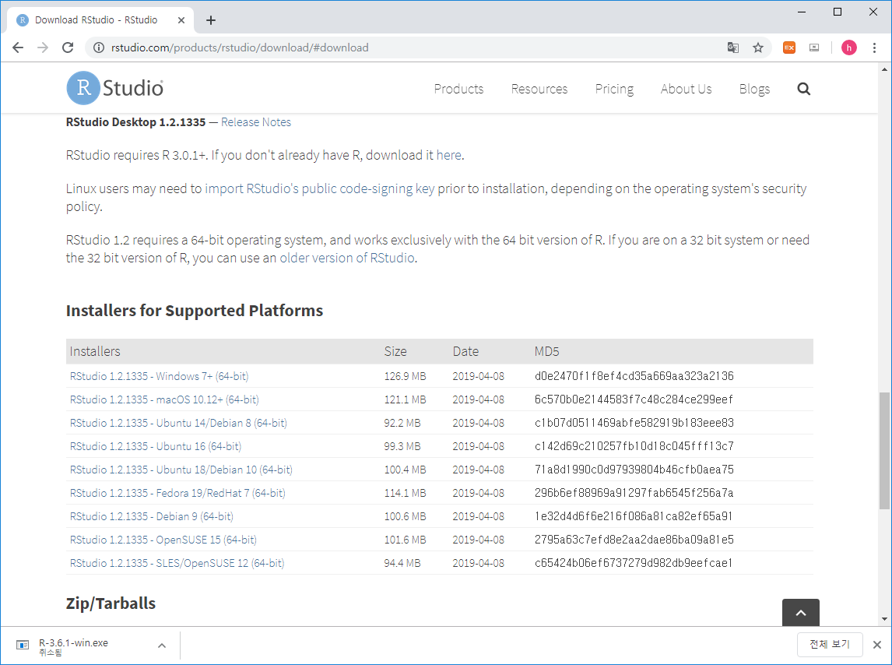
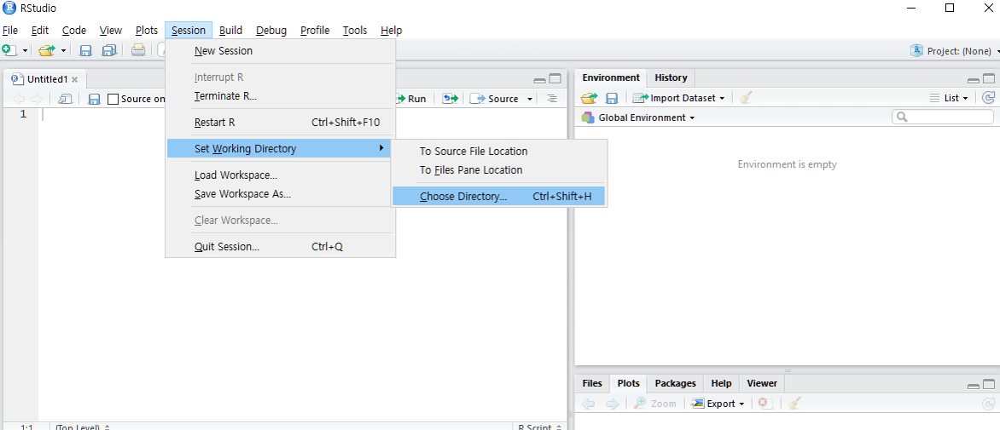
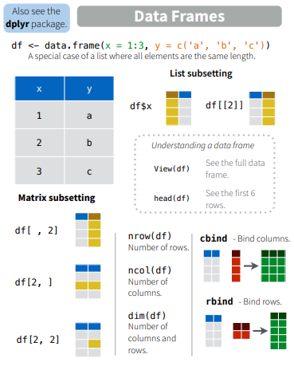
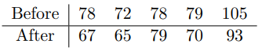
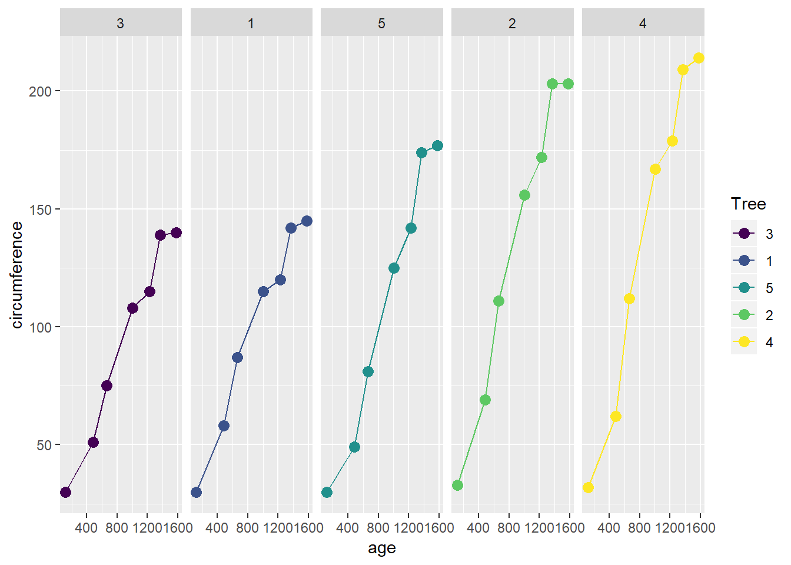

1 Introduction 강의 개요
- 장소: 한국생명공학연구원 연구동 세미나실 1213호 (매주수요일 13:00~16:00)
- 강사: 한국생명공학연구원 바이오합성연구센터 김하성
- 연락처: 042-860-4372, haseong@kribb.re.kr (생명연 연구동 1143)
- 강의site: https://greendaygh.github.io/Rstat2020/
1.1 Goal 강의 목표
- 이공계열 대학원생의 원활한 실험 설계와 데이터 분석을 위한 범용 프로그램 언어인 R의 사용법과 프로그래밍 기술의 습득이 목표. 특히 Data scientist를 위해 개발된 tidyverse와 ggplot2 패키지 사용법을 위주로 강의와 실습을 진행하며 후반부 대규모 서열 데이터를 이용한 실습을 통해 R의 활용 기술을 학습함
1.2 This course
- R 사용에 대한 기본 개념과 프로그래밍을 중심으로 필요시 기초 통계지식 강의
- 실습 데이터로는 교제에서 제공되는 예제 데이터와 생물학 서열 등 대규모 데이터를 사용한 분석 진행
- 모든 강의 시간 실습을 위한 개인 노트북 지참 필수
- 강의 자료는 강의 웹사이트에 수업 전 업데이트됨
- 상황에 따라 강의 일정이 조정될 수 있음
- 과제물은 필요에 따라 수업 후 제공되며 다음 수업 전까지 메일로 제출
1.3 Tips
- 눈으로 이해하지 않고 스스로 실습 필수
- 각 명령줄이 어떻게/왜 작동하는지 이해하기
- 인터넷 검색을 통한 다른사람의 코드를 적극적으로 이해하고 적용 필요
1.4 References books 참고 교제
- Using R for Introductory Statistics by John Verzani
- R for Data Science (https://r4ds.had.co.nz, https://github.com/hadley)
- Bioinformatics Data Skills by Vince Buffalo (http://2.droppdf.com/files/5aTvl/bioinformatics-data-skills.pdf)
- First Course in Statistical Programming with R by Braun and Murdoch (https://www.cambridge.org/core/books/first-course-in-statistical-programming-with-r/C9F088122AB40517B07FA77F2F0FDE2F)
- Introductory Statistics with R by Dalgaard (http://www.academia.dk/BiologiskAntropologi/Epidemiologi/PDF/Introductory_Statistics_with_R__2nd_ed.pdf)
- Modern Applied Statistics with S by Venables and Ripley (http://www.bagualu.net/wordpress/wp-content/uploads/2015/10/Modern_Applied_Statistics_With_S.pdf)
- 일반통계학 (영지문화사, 김우철 외)
1.5 References 참고 자료
- https://resources.rstudio.com/
- http://shiny.rstudio.com/tutorial/
- R 홈페이지 https://www.r-project.org/
- Rstudio 홈페이지 https://www.rstudio.com/
- Packages for biologists https://www.bioconductor.org/
- R 기본 문서들 (소개, 사용, 설치, 운영) https://cran.r-project.org/manuals.html
- R ebooks https://bookdown.org/
- Cheat Sheets https://www.rstudio.com/resources/cheatsheets/
1.6 Evaluation 평가 세부 항목
- 출석 50% / 과제 50% / 80점 이상 S, 80점 미만 U 부여
1.7 Schedule 강의 계획
- 1주차 - Introduction and installation of R/Rstudio
- 2주차 - R language basics I – Interface, operations, packages, help, NULL, NA, and NaN
- 3주차 - R language basics II - data type and structure
- 4주차 - R language basics III – if, for, while
- 5주차 - R programming – Maze Robot (function, matrix) I
- 6주차 - R programming – Maze Robot (function, matrix) II
- 7주차 - Data manipulation I - read, write, rbind, cbind, split, subset
- 8주차 - Data manipulation II - dplyr, apply, reshape
- 9주차 - Visualizing data in R I – plot, hist
- 10주차 - Visualizing data in R II – ggplot2
- 11주차 - Visualizing data in R III – ggplot2
- 12주차 - Shiny for interactive applications in R I
- 13주차 - Shiny for interactive applications in R II
- 14주차 - Data analysis #1
- 15주차 - Data analysis #2
- 16주차 - Data analysis #3
1.8 R Lecture Youtube Link
1.8.1 Lecture Chapter 3
- 강의 Chapter 3-1 (vector) https://youtu.be/Fif5LnalvUE
- 강의 Chapter 3-2 (vector) https://youtu.be/7-qVYzrKIlU
- 강의 Chapter 3-3 (matrix) https://youtu.be/t3-NaiMuaYs
- 강의 Chapter 3-4 (data.frame, list) https://youtu.be/w10jHp8A128
- 강의 Chapter 3-5 (missing) https://youtu.be/tItpzjBMeDI
- 강의 Chapter 3-6 (useful functions I) https://youtu.be/3AaZ0vqgNHk
- 강의 Chapter 3-7 추가 (factor) https://youtu.be/Xxd38TM3XBs
1.8.2 Lecture Chapter 4
- 강의 Chapter 4-1 (function) https://youtu.be/NrGe3V_UpAc
- 강의 Chapter 4-2 (function) https://youtu.be/vfaqzso883k
- 강의 Chapter 4-3 (if) https://youtu.be/SMHFFYi7Akc
- 강의 Chapter 4-4 (for) https://youtu.be/I9BZqbQCTiE
- 강의 Chapter 4-5 (while repeat) https://youtu.be/fZj0ZAm2TPk
- 강의 Chapter 4-6 (functions2) https://youtu.be/CYQO_k4qcU4
- 강의 Chapter 4-7 (read write) https://youtu.be/I9BZqbQCTiE
- 강의 Chapter 4-8 (readxl) https://youtu.be/_6ZzjvotTww
- 강의 Chapter 4-9 (readxl2) https://youtu.be/7YLNrq5vFiw
- 강의 Chapter 4-10 (readxl3) https://youtu.be/_1X3AGhCsCw
1.8.3 Lecture Chapter 5
- 강의 Chapter 5-1 (graph) https://youtu.be/KdlAqVVFxoI
- 강의 Chapter 5-2 (graph) https://youtu.be/NXZlV-xnRTY
- 강의 Chapter 5-3 (graph) https://youtu.be/NYwxIqC2kjU
- 강의 Chapter 5-4 (graph) https://youtu.be/VBbPkvdd3K0
- 강의 Chapter 5-5 (graph) https://youtu.be/5Nurf1z2JTo
1.8.4 Lecture Chapter 6
- 강의 Chapter 6-1 (ggplot2 basics) https://youtu.be/551gss8ffuI
- 강의 Chapter 6-2 (ggplot2 facet and barplot) https://youtu.be/DdiXq9juBpQ
- 강의 Chapter 6-3 (ggplot2 bar and line graph) https://youtu.be/mCF-iU6XZxw
- 강의 Chapter 6-4 (ggplot2 smoothing) https://youtu.be/ACvVxKJ1mOc
- 강의 Chapter 6-5 (ggplot2 statistics and positions) https://youtu.be/NCQdwLrhlkI
- 강의 Chapter 6-6 (ggplot2 theme) https://youtu.be/u-XcIHSFu9Q
- 강의 Chapter 6-7 (ggplot2 theme and ex) https://youtu.be/NTAjYPVVH1c
1.8.5 Lecture Chapter 7
- 강의 Chapter 7-1 (Data transformation basics) https://youtu.be/loG82uC89nQ
- 강의 Chapter 7-2 (Data transformation basics) https://youtu.be/Arbz7Nt_eKE
- 강의 Chapter 7-3 (Data transformation basics) https://youtu.be/r9Q_P-n0gLI
1.8.6 Lecture Chapter 8
- 강의 Chapter 8-1 (dplyr) https://youtu.be/geXHum2wwns
- 강의 Chapter 8-2 (dplyr) https://youtu.be/eioDf3oA4AE
- 강의 Chapter 8-3 (dplyr) https://youtu.be/WOLotZYhZeE
- 강의 Chapter 8-4 (dplyr) https://youtu.be/BOFAxazZv60
2 R basics
2.1 What is R / Rstudio

R은 통계나 생물통계, 유전학을 연구하는 사람들 사이에서 널리 사용되는 오픈소스 프로그래밍 언어 입니다. Bell Lab에서 개발한 S 언어에서 유래했으며 엄청나게 많은 라이브러리 (다른 사람들이 만들어 놓은 코드)가 있어서 쉽게 가져다 사용할 수 있습니다. R은 복잡한 수식이나 통계 알고리즘을 간단히 구현하고 사용할 수 있으며 C, C++, Python 등 다른 언어들과의 병행 사용도 가능합니다. 2019년 top five language에 랭크 되었으며 이는 빅데이터 증가에 따라 인기가 높아진 것으로 볼 수 있습니다 (참고로 2018년에는 7위).

Despite being a much more specialized language than the others, it’s maintained its popularity in recent years due to the world being awash in an ever-growing pile of big data. https://spectrum.ieee.org/computing/software/the-top-programming-languages-2019
R은 데이터를 통계분석에 널리 사용되는데 이는 데이터를 눈으로 확인하기 위한 visualization 이나 벡터 연산 등의 강력한 기능 때문에 점점 더 많은 사람들이 사용하고 있습니다. 기존에는 속도나 확장성이 다른 언어들에 비해 단점으로 지적되었으나 R 언어의 계속적인 개발과 업데이트로 이러한 단점들이 빠르게 보완되고 있습니다. R 사용을 위해서는 R 언어의 코어 프로그램을 먼저 설치하고 그 다음 R 언어용 IDE인 RStudio 설치가 필요합니다.


2.2 R / Rstudio installation
R 사이트에 접속 후 (https://www.r-project.org/) 좌측 메뉴 상단에 위치한 CRAN 클릭.

미러 사이트 목록에서 Korea의 아무 사이트나 들어감

Download R for Windows를 클릭 후 base 링크 들어가서


Download R 3.6.3 for Windows 링크로 실행 프로그램 다운로드 (2020.3 현재 R 버전은 3.6.3). 로컬 컴퓨터에 Download 된 R-3.6.3-win.exe 를 실행하고 설치 프로그램의 지시에 따라 R 언어 소프트웨어 설치를 완료합니다.

Rstudio는 R 언어를 위한 오픈소스 기반 통합개발환경(IDE)으로 R 프로그래밍을 위한 편리한 기능들을 제공해 줍니다. 다음 사이트에 접속 (https://www.rstudio.com/), 상단의 Products > RStudio 클릭
RStudio Desktop 선택

Download RStudio Desktop 클릭
RStudio Desktop Free 버전의 Download를 선택하고

Download RStudio for Windows (2020.03현재 version 1.2.5033) 클릭, 다운로드. 로컬 컴퓨터에 다운로드된 RStudio-1.2.5033.exe를 실행하고 설치 가이드에 따라 설치 완료합니다. 
2.3 Rstudio interface
- 아래 그림의 좌측 상단의 공간은 코드편집창, 좌측 하단은 콘솔창 입니다.

2.4 Keyboard shortcuts
- 참고사이트
- https://support.rstudio.com/hc/en-us/articles/200711853-Keyboard-Shortcuts
- Tools –> Keyboard shortcut Quick Reference (
Alt + Shift + K)
- 코드편집창 이동 (
Ctrl+1) 콘솔창 이동(Ctrl+2) - 한 줄 실행 (
Ctrl+Enter) - 주석처리 (
Ctrl + Shift + C)- 또는
#으로 시작하는 라인
- 또는
- 실습
- 코드편집창에서 다음 입력

- 단축키
Ctrl + enter로 코드 실행 - 단축키
Ctrl + 2로 커서 콘솔창으로 이동 x값x+y값 확인- 단축키
Ctrl + 1로 코드편집창 이동 - 단축키
Ctrl + Shift + C사용
2.5 Set working directory
시작 전 항상 작업 디렉토리 설정. 예를 들어 c: 아래 새로운 디렉토리 rprog2020 을 만들고 작업공간으로 설정
또는 아래와 같이 RStudio 메뉴 에서 설정

2.7 Help
R의 장점 중 하나로 방대한 양의 도움말 페이지가 제공됩니다. ? 명령을 사용하면 되며 구글이나 웹에서도 도움을 얻을 수 있습니다.
2.8 RStudio workspace


2.9 R packages
R은 “package”라 불리우는 다양한 함수 라이브러리를 사용할 수 있습니다. 예를 들어 sum() 이나 sd()와 같은 함수는 stats이라는 패키지에서 구현된 함수 입니다. 이러한 패키지는 인터넷의 repository에서 구할 수 있으며 대표적으로 The Comprehensive R Archive Network (CRAN) http://cran.r-project.org/web/views/ 와 생물학자를 위한 Bioconductor specialised in genomics http://www.bioconductor.org/packages/release/BiocViews.html#___Software 가 있습니다. 이러한 패키지의 설치는 아래와 같이 RStudio를 이용하거나 콘솔창에서 install.packages() 함수를 이용할 수 있습니다.

- UsingR package installation

패키지를 설치하고 사용하기 위해서는 library() 함수를 사용해서 미리 loading 해 두어야 합니다. 한 번 로딩으로 작업 세션이 끝날때까지 관련된 함수를 사용할 수 있으나 R 세션이나 RStudio를 재시작 할 경우 다시 로딩해야 사용할 수 있습니다.
- R 설치 디렉토리
- R 패키지 설치 디렉토리

2.10 Data sets
대부분의 패키지는 함수와 함께 관련된 도움말, 예제, 그리고 데이터셋을 같이 제공해 줍니다. library() 함수를 사용할 때 자동으로 같이 로딩이 되며 data() 함수를 사용해서 사용자 작업공간에 복사본을 만들어서 사용할 수 있습니다.

3 R programming basics I
3.1 Terminology
- Session: R 언어 실행 환경
- Console: 명령어 입력하는 창
- Code: R 프로그래밍 변수/제어문 모음
- Objects (개체, variable): 데이터(값, value)가 저장되는 장소
- Object (variable) types:
- Vectors: 값들의 모임 combine function
c()EX: c(6, 11, 13, 31, 90, 92) - Factors: 범주형 데이터 저장 장소
- Data frames: 2D matrix 형태 데이터 자장 장소
- Vectors: 값들의 모임 combine function
- Data (value) types: Integers, doubles/numerics, logicals, and characters.
- Conditionals (조건, 제어):
if,==,&(AND),|(OR) Ex:(2 + 1 == 3) & (2 + 1 == 4)for,while: 반복 수
- Functions (함수, commands): 특정 일 수행, 함수이름 - 입력값 (arguments) - 출력값 (output) 으로 구성
3.2 R console script
콘솔에서 바로 계산을 수행할 수 있습니다. 참고로 이전에 수행한 명령은 콘솔에 커서가 있는 상태에서 위 아래 화살표를 누르면 볼 수 있고 엔터를 눌러 재사용 할 수 있습니다. ;을 사용하면 두 개의 명령을 동시에 수행할 수 있습니다.
\[ 2 + 2 \] \[ ((2 - 1)^2 + (1 - 3)^2)^{1/2} \]
3.3 What is a programming language


3.4 Variables and values
- R is a programming language
- Assignment operator (
<-OR=)- Valid object name
<-value - 단축키:
Alt + -(the minus sign)
- Valid object name
- 내장 변수 Built-in variables
- 변수이름 작명법
- Characters (letters), numbers, “_”, “.”
- A and a are different symbols
- Names are effectively unlimited in length
i_use_snake_case <- 1
otherPeopleUseCamelCase <- 2
some.people.use.periods <- 3
And_aFew.People_RENOUNCEconvention <- 4- 자동 완성 기능 (Tab completion) in RStudio
3.5 Object (variable) type of (storage) mode

3.6 Levels of measurement
- Nominal (명목형) – 사람 이름
- Ordinal (순서형) – 달리기 도착 순서
- Interval (구간형) – 선수1, 선수2 종점통과 시간
- Ratio (비율형) – 출발시간 기준 종점 통과 시간

- Numeric data types
- Discrete (이산형) data - 카운트, 횟수
- Continuous (연속형) data - 키, 몸무게, Cannot be shared
- Factors data - Categories to group the data
- Character data - Identifiers
- Date and time
3.7 Object - Vectors
vector는 R의 기본 데이터 구조입니다. numeric vector, logical vector, character vector 등 저장되는 값의 타입에 따라 크게 세가지로 나눌 수 있습니다. class() 함수를 이용해서 값의 타입을 알아낼 수 있습니다. Combine function인 c()를 활용하여 만들며 값을 순차적으로 붙여갈 수 있습니다.
x <- c(10.4, 5.6, 3.1, 6.4, 21.7)
class(x)
y <- c("X1", "Y2", "X3", "Y4")
class(y)
z <- c(T, F, F, T)
class(z)이 중 특히 numeric 형식의 벡터를 만드는 다양한 편의 함수들이 존재합니다.
1:5
seq(1,5, by=1)
seq(0, 100, by=10)
seq(0, 100, length.out=11)
?seq
rep(5, times=10)
rep(1:3, times=4)
rep(1:3, each=3)3.7.1 Exercise 3-1
odds라는 이름의 변수에 1부터 100까지의 홀수만을 저장하시오 (seq() 함수 사용)
3.7.2 Exercise 3-2
1, 2, 3, 4, 5 다섯 숫자에 대해서 두 개의 수를 뽑은 후 더해서 나올 수 있는 모든 수를 구하시오 즉, 1+1, 1+2, 1+3, …, 2+1, 2+2, …, 5+1, 5+2, …, 5+5 의 모든 경우에 대한 결과값을 구함 (rep() 함수 사용)
Logical 벡터는 True 또는 False를 원소로 갖는 벡터 입니다. 앞글자가 대분자로 시작하는 것을 기억하시고 T 또는 F와 같이 한 문자로 표현할 수도 있습니다. 특정 조건에 대한 판단 결과를 반환할 경우에도 논리값을 사용합니다. 이 경우 조건을 판단 후 인덱싱 방법으로 해당 값들을 뽑아내기도 합니다.
3.7.3 Exercise 3-3
1부터 100까지의 수를 n이라는 이름의 변수에 저장하고 이 중 짝수만을 뽑아내서 출력하시오 (which()함수 사용)
Character(문자형) 벡터의 경우 문자열을 다루는데 자주 쓰이는 paste() 함수의 사용법을 알아두면 편리합니다. paste() 함수는 서로 다른 문자열을 붙이는데 주로 사용됩니다. 참고로 문자열을 나누는 함수는 strsplit() 입니다. paste()에서 붙이는 문자 사이에 들어가는 문자를 지정하는 파라메터는 sep 이고 strsplit()함수에서 자르는 기준이 되는 문자는split 파라메터로 지정해 줍니다 (?split 또는 ?paste 확인).
paste("X", "Y", "Z", sep="_")
paste(c("Four","The"), c("Score","quick"), c("and","fox"), sep="_")
paste("X", 1:5, sep="")
paste(c("X","Y"), 1:10, sep="")
x <- c("X1", "Y2", "X3", "Y4", "X5")
paste(x[1], x[2])
paste(x[1], x[2], sep="")
paste(x, collapse="_")
strsplit("XYZ", split="")Factor형은 범주형데이터를 저장하기 위한 object 이며 R 언어에서 특별히 만들어져 사용되고 있습니다. factor() 함수를 이용해 생성하며 생성된 객체는 다음과 같이 level이라는 범주를 나타내는 특성값을 가지고 있습니다.
새로운 범주의 데이터를 추가할 경우 다음과 같이 해당되는 level을 먼저 추가하고 값을 저장해야 합니다.
factor는 기본적으로 level에 표시된 순서가 위치 (정렬) 순서입니다. 이를 바꾸기 위해서는 다음과 같이 levels 함수를 이용해서 순서를 바꿀 수 있습니다.
#library(UsingR)
str(Cars93)
x <- Cars93$Origin
plot(x)
levels(x) <- c("non-USA", "USA")
levels(x)
plot(x)vector 들은 다음과 같은 builtin 함수들을 사용해서 해당 변수의 attribute를 알아낼 수 있습니다. attribute에는 원소 이름, 타입, 길이 등 vector형 변수가 가질 수 있는 특성을 말합니다.
head(precip)
class(precip)
length(precip)
names(precip)
test_scores <- c(100, 90, 80)
names(test_scores) <- c("Alice", "Bob", "Shirley")
test_scores인덱싱은 vector 데이터의 일부 데이터를 참조할 때 사용하는 방법입니다.
3.8 Object - matrix
매트릭스는 2차원 행렬로 같은 형식의 데이터 값 (numberic, character, logical) 으로만 채워진 행렬을 말합니다. 메트릭스를 만드는 방법은 아래와 같으며 nrow 와 ncol 파라메터에 행과 열의 수를 넣고 각 셀에 들어갈 값은 가장 앞에 위치한 data 파라메터에 넣어 줍니다 (?matrix로 파라메터 이름 확인). 메트릭스 인덱싱은 메트릭스 안의 값을 저장하거나 참조할때 (빼올때) 사용하는 방법입니다. 메트릭스 변수이름 바로 뒤에 대괄호를 이용해서 제어를 하며 대괄호 안에 콤마로 구분된 앞쪽은 row, 뒷쪽은 column 인덱스를 나타냅니다.
mymat <- matrix(0, nrow=100, ncol=3) # 1
mymat[,1] <- 1:100 # 2
mymat[,2] <- seq(1,200,2) # 3
mymat[,3] <- seq(2,200,2) # 4매트릭스의 row나 column에 이름이 주어져 있을 경우 이름을 따옴표(")로 묶은 후 참조가 가능합니다. row나 column의 이름은 rownames() 또는 colnames()로 생성하거나 변경할 수 있습니다. row나 column의 개수는 nrow() 또는 ncol() 함수를 사용합니다.
colnames(mymat)
colnames(mymat) <- c("A", "B", "C")
colnames(mymat)
colnames(mymat)[2] <- "D"
colnames(mymat)
rownames(mymat) <- paste("No", 1:nrow(mymat), sep="")
rownames(mymat)여러 row나 column을 참조할 경우 아래와 같이 combine 함수를 사용하여 묶어줘야 하며 스칼라값을 (임의의 숫자 하나) 더하거나 뺄 경우 vector / matrix 연산을 기본으로 수행합니다.
3.8.1 Exercise 3-4
column이 3개이고 row가 3인 0으로 채워진 m이라는 이름의 matrix를 만들고 m의 각 원소를 1로 채우시오.
3.9 Object - data.frame
데이터프레임은 형태는 매트릭스와 같으나 컬럼 하나가 하나의 변수로서 각 변수들이 다른 모드의 값을 저장할 수 있다는 차이가 있습니다. $ 기호를 이용하여 각 구성 변수를 참조할 수 있습니다. 컬럼 한 줄이 하나의 변수 이므로 새로운 변수도 컬럼 형태로 붙여 넣을 수 있습니다. 즉, 각 row는 샘플을 나타내고 각 column은 변수를 나타내며 각 변수들이 갖는 샘플의 개수 (row의 길이, vector 의 길이)는 같아야 합니다. R 기반의 데이터 분석에서는 가장 선호되는 데이터 타입이라고 볼 수 있습니다.
## data.frame
ids <- 1:10
ids
idnames <- paste("Name", ids, sep="")
idnames
students <- data.frame(ids, idnames)
students
class(students$ids)
class(students$idnames)
students$idnames
str(students)
students <- data.frame(ids, idnames, stringsAsFactors = F)
class(students$idnames)
students$idnames
students[1,]
str(students)데이터프레임에서도 변수 이름으로 인덱싱이 가능합니다.
3.10 Object - list
리스트는 변수들의 모임이라는 점에서 데이터프레임과 같으나 구성 변수들의 길이가 모두 같아야 하는 데이터프레임과는 달리 다른 길이의 변수를 모아둘 수 있는 점이 다릅니다. 즉, R언어에서 두 변수를 담을 수 있는 데이터 타입은 list와 data frame 두 종류가 있는데 list 변수 타입은 vector 형태의 여러개의 element를 가질 수 있으며 각 vector의 길이가 모두 달라도 됩니다. list의 인덱싱에서 [ ]는 리스트를 반환하고 [[ ]]는 vector element들을 반환합니다.

## list
parent_names <- c("Fred", "Mary")
number_of_children <- 2
child_ages <- c(4, 7, 9)
data.frame(parent_names, number_of_children, child_ages)
lst <- list(parent_names, number_of_children, child_ages)
lst[1]
lst[[1]]
class(lst[1])
class(lst[[1]])
lst[[1]][1]
lst[[1]][c(1,2)]
3.11 Missing values
특정 값이 “Not available” 이거나 “Missing value” 일 경우 벡터의 해당 원소 자리에 데이터의 이상을 알리기 위해 NA를 사용합니다. 따라서 일반적인 연산에서 NA가 포함되어 있는 경우 데이터의 불완전성을 알리기 위해 연산의 결과는 NA가 됩니다. is.na() 함수는 해당 변수에 NA 값이 있는지를 검사해주는 함수이며 R에는 이 외에도 다음과 같은 특수 값들이 사용되고 있습니다.
- NA: Not available, The value is missing
- NULL: a reserved value
- NaN: Not a number (0/0)
- Inf: (1/0)
3.12 Useful functions I
다음은 벡터형 변수와 같이 쓰이는 유용한 함수들입니다.
z <- sample(1:10, 100, T)
head(z)
sort(z)
order(z)
table(z)
p <- z/sum(z)
round(p, digits=1)
digits <- as.character(z)
n <- as.numeric(digits)
d <- as.integer(digits)3.12.1 Exercise 3-5
- score 라는 변수에 1부터 100까지 중 랜덤하게 선택된 20개의 수로 10 x 2 matrix를 만드시오
- score의 row 이름을 문자형으로 Name1, Name2, …, Name10으로 지정하시오 (
paste()변수 사용) - score의 column 이름을 문자형으로 math와 eng로 지정하시오
- 이 matrix의 첫번째 컬럼과 두 번째 컬럼의 수를 각각 더한 후 total_score라는 변수에 저장 하시오
- total_score 오름차순 순서를 나타내는 인덱스 (
order()함수 사용)를 o라는 변수에 저장 하시오 - score를 o순서로 재 배치 하고 score_ordered 변수에 저장 하시오

이 저작물은 크리에이티브 커먼즈 저작자표시-비영리-변경금지 4.0 국제 라이선스에 따라 이용할 수 있습니다.
4 R programming basics II
4.1 A script in R
R 프로그래밍을 통해서 사용자가 원하는 기능을 수행하는 방법은 다음과 같이 스크립트를 만들어서 실행하는 것 입니다. 일반적으로 R을 이용한 스크립트 명령을 어떻게 실행하는지 알아보겠습니다. 다음 예제는 입력 값들의 평균을 계산해서 출력해 주는 스크립트 명령입니다. R base 패키지에서 기본으로 제공되는 mean()이라는 함수가 있지만 사용하지 않고 sum()과 length() 함수를 사용했습니다.
numbers <- c(0.452, 1.474, 0.22, 0.545, 1.205, 3.55)
cat("Input numbers are", numbers, "\n")
numbers_mean <- sum(numbers)/length(numbers)
out <- paste("The average is ", numbers_mean, ".\n", sep="")
cat(out)상황에 따라 다르긴 하지만 보통 위 스크립트를 실행할 때 R 파일을 하나 만들고 source()라는 함수를 사용해서 파일 전체를 한번에 읽어들이고 실행을 시킵니다. 위 코드를 myscript.R 이라는 새로운 R 파일을 하나 만들고 저장 후 다음과 같이 실행할 수 있습니다. 참고로 위 파일은 현재 working directory와 같은 위치에 저장해야 합니다.
그러나 위와 같은 식으로 실행할 경우 다음 몇 가지 문제가 있습니다. 하나는 입력 값이 바뀔 때마나 파일을 열어 바뀐 값을 저장해 줄 필요가 있습니다. 결과 값에 대해서 다른 처리를 하고 싶을 경우 또한 파일을 직접 수정해 주어야 합니다. 또한 모든 변수들이 전역변수로 사용되어 코드가 복잡해질 경우 변수간 간섭이 생길 가능성이 높습니다.
4.2 Functions
함수를 사용하면 위와같은 문제를 극복할 수 있습니다. 함수(Function)는 다음과 같은 포멧으로 구현할 수 있습니다.
예를 들어 다음과 같은 my_sine 함수를 만들 수 있으며 parameter (매개변수)는 x이고 y는 반환값을 저장하는 지역변수 입니다.
만들어진 함수는 다음과 같이 사용할 수 있습니다. 만들어진 함수는 처음에 한 번 실행해 주어 실행중인 R session에 등록한 후 사용할 수 있습니다. 여기서 함수로 전달되는 값 pi는 argument (전달인자) 라고 합니다. 전달인자는 함수에서 정의된 매개변수의 갯수와 같은 수의 전달인자를 입력해 주어야 합니다.
- Terminology
- function name:
my_sine - parameter:
x - argument:
pi - return value:
y
- function name:
이제 위 스크립트에서 사용된 코드를 함수로 바꿔봅니다. numbers (전달인자)를 받는 매개변수를 x로 하고 함수 이름은 mymean 이고 평균값 (numbers_mean)을 반환하는 합수입니다.
numbers <- c(0.452, 1.474, 0.22, 0.545, 1.205, 3.55)
mymean <- function(x){
cat("Input numbers are", x, "\n")
numbers_mean <- sum(x)/length(x)
out <- paste("The average is ", numbers_mean, ".\n", sep="")
cat(out)
return(numbers_mean)
}
retval <- mymean(numbers)
cat(retval)myscript.R이라는 파일을 열고 작성된 스크립트에 더해서 아래처럼 함수 코드를 만들 경우 source() 함수로 함수를 세션으로 읽어오고 바로 사용할 수 있습니다. 위와 같이 함수를 만들 경우 입력 값을 언제든 바꿔서 사용할 수 있고 반환값에 대한 추가적인 연산도 쉽게 수행 할 수 있습니다.
4.2.1 Exercise 4-1
mysd라는 이름의 (표본)표준편차를 구하는 함수를myscript.R파일에 구현하시오 (sd()함수 사용 불가, 다음 표준편차 공식 이용)
\[ \sigma = \sqrt{\frac{\sum(x-mean(x))^2}{length(x)-1}} \]
코드는 아래와 같음
1부터 100까지의 값을
x에 저장하고 mysd 함수를 사용해서 표준편차를 구하시오앞서 작성한
mymean함수와mysd함수를 같이 사용하여x를 표준화 하고y로 저장하시오. 표준화 공식은 다음과 같음
\[ y = \frac{x - mean(x)}{sd(x)} \]
x와y를 갖는z라는 이름의data.frame을 생성하시오
다음 코드를 보면 전역변수 x, y는 지역변수 x, y와 독립적으로 사용됨을 알 수 있습니다.
my_half <- function(x){
y <- x/2
cat("local variable x:", x, "\n")
cat("local variable y:", y, "\n")
return(y)
}
y <- 100
x <- 20
cat("Global variable x:", x, "\n")
cat("Global variable y:", y, "\n")
my_half(5)log, sin등의 함수들은 Built-in function으로 같은 이름의 함수를 만들지 않도록 주의합니다.
4.3 Vectorized functions
초기에 R이 다른 프로그래밍 언어에 비해서 경쟁력을 갖는 이유 중 하나가 바로 이 벡터 연산 기능 이였습니다. vector 변수에 들어있는 각 원소들에 대해서 특정 함수나 연산을 적용하고 싶을 경우 전통 방식의 C나 Java등의 언어에서는 원소의 개수만큼 반복문을 돌면서 원하는 작업을 수행 했습니다. 그러나 R의 벡터 연산 기능은 별도의 반복문 없이 vector 안에 있는 원소들에 대한 함수 실행 또는 연산을 수행할 수 있습니다.
x <- c(10, 20, 30)
x + x
sqrt(x)
sin(x)
log(x)
x-mean(x)
length(x)
test_scores <- c(Alice = 87, Bob = 72, James= 99)
names(test_scores)4.3.1 Exercise 4-2
다음은 한 다이어트 프로그램의 수행 전 후의 다섯 명의 몸무게이다.

각각을 before 와 after 이름의 변수에 저장 후 몸무게 값의 변화량을 계산하여 diff 라는 변수에 저장하고 diff에 저장된 값들의 평균을 구하시오
my_mean 이라는 이름의 함수로 평균을 구하는 코드를 작성 하시오 (빌트인 함수 사용하지 않음)
- 함수이름: my_mean
- parameter: x
- return 값: y
- (x[1]+x[2]+x[3]+x[4]+x[5])/5
- 빌트인 함수 sum()과 length()를 이용해 동일한 기능을 하는 함수를 작성하시오
- 함수이름 my_mean2
- sum(), length() 사용
4.3.2 Exercise 4-3
다음 네 학생이 있으며 “John”,“James”,“Sara”, “Lilly” 각 나이는 21, 55, 23, 53 이다. ages 라는 변수를 생성하고 각 나이를 저장한 후 who라는 이름의 함수를 만들어서 50살 이상인 사람의 이름을 출력하는 함수를 만드시오.
- ages라는 변수에 나이 저장, c() 함수 이용, vector 형태 저장
- names() 함수 이용해서 각 ages 벡터의 각 요소에 이름 붙이기
- which() 함수 사용해서 나이가 50보다 큰 인덱스 찾고 해당 인덱스 값 출력 하기
- ages를 메개변수로 받아서 나이가 50보다 큰 인덱스 찾고 해당 인덱스의 값을 반환해 주는 who 함수 만들고 사용
4.4 if statements
R에서의 제어문의 사용은 다른 프로그래밍 언어와 거의 유사합니다. 먼저 if 는 다음과 같은 형식으로 사용되며 () 안에 특정 조건 판단을 위한 표현이 들어갑니다.
특히 condition은 하나의 원소에 대한 조건 판단문으로 T 또는 F 값 하나만을 반환하는 문장이어야 합니다. 위 코드는 만약 condition 조건이 True 이면 expr_1를 실행하고 False이면 expr_2를 실행하라는 명령입니다. condition 안에서 사용되는 비교 연산자들은 다음과 같습니다.

x <- 2
if(x%%2 == 1){
cat("Odd")
}else{
cat("Even")
}
x <- 5
if(x > 0 & x < 4){
print("Positive number less than four")
}
if(x > 0) print("Positive number")
x <- -5
if(x > 0){
print("Non-negative number")
} else if(x <= 0 & x > -5){
print("Negative number greater than -5")
} else {
print("Negative number less than -5")
}
if(x > 0)
print("Non-negative number")
else
print("Negative number")4.4.1 Exercise 4-4
1부터 100까지 수 중 랜덤하게 1 개의 값을 골라 n 변수에 저장하고 다시 1부터 100까지 랜덤하게 n개의 수를 중복을 허용해서 골라 x 변수에 저장 하시오 (랜덤 생성:
sample()함수 사용)다음은 median (중간값)을 구하는 공식이며 x의 길이가 (n이) 홀수일 경우와 짝수일 경우에 따라서 다른 공식이 사용된다. 다음 공식과 코드를 이용하여 mymedian 이라는 이름의 함수를 만들고 입력 값들의 중간값을 구해서 반환하는 함수를 만드시오. (
%%나머지 연산,if문 사용, 아래 중간값 코드 참고)
\[ median(X) = \begin{cases} \frac{1}{2} X[\frac{n}{2}] + \frac{1}{2} X[1+\frac{n}{2}] & \mbox{if } n \mbox{ is even} \\ X[\frac{n+1}{2}] & \mbox{if } n \mbox{ is odd} \end{cases} \]
4.5 for, while, repeat
for 문은 반복적으로 특정 코드를 실행하고자 할 때 사용됩니다. 다음과 같은 형식으로 사용할 수 있습니다. var는 반복을 돌 때마다 바뀌는 변수로 {} 안에서 사용되는 지역 변수 입니다. seq는 vector 형식의 변수로 반복을 돌 때마다 순차적으로 var에 저장되는 값들 입니다.
for(var in seq){
expression
}
x <- 1:10
for(i in x){
cat(i, "\n")
flush.console()
}
sum_of_i <- 0
for(i in 1:10){
sum_of_i <- sum_of_i + i
cat(i, " ", sum_of_i, "\n");flush.console()
}while문도 for문과 같이 반복적으로 특정 코드를 수행하고자 할 때 사용합니다. 사용하는 문법은 다음과 같으며 cond는 True 또는 False 로 반환되는 조건문을 넣고 True 일 경우 계속해서 반복하면서 expressions를 수행하며 이 반복은 cond가 False로 될 때 까지 계속됩니다.
while문을 사용할 경우 다음과 같이 indicator라 불리우는 변수를 하나 정해서 반복 할 때마다 값이 바뀌도록 해 주어야 합니다. 그렇지 않으면 무한 루프를 돌게 되는 문제가 발생합니다.
repeat 명령은 조건 없이 블럭 안에 있는 코드를 무조건 반복하라는 명령 입니다. 따라서 블럭 중간에 멈추기 위한 코드가 필요하고 이 명령이 break 입니다.
4.6 Avoiding Loops
R에서는 가능하면 loop문을 사용하지 않는 것이 좋습니다. 이는 다른 언어들 보다 반복문이 느리게 수행된다는 이유 때문이기도 합니다. 그러나 R에서는 반복문을 수행하는 것 보다 훨씬 더 빠르게 반복문을 수행 한 것과 같은 결과를 얻을 수 있는 다양한 방법들이 제공되고 있습니다. 차차 그런 기법들에 대한 학습을 진행하도록 하겠습니다.
4.7 Object Oriented Programming (Advanced)
OOP는 객체지향 프로그래밍 이라고 합니다. OOP를 이용해서 프로그래밍으로 풀고자 하는 문제를 좀 더 명확하게 개념을 수립하고 복잡한 코드를 명료하게 만들 수 있습니다. 그런데 R에서 OOP는 다른 언어보다는 좀 더 어려운 개념적인 이해가 필요합니다. S3, S4, 그리고 Reference class 가 있으며 S3, S4는 Generic function을 이용하며 다른 언어에서 사용하는 OOP 개념과는 다릅니다. Reference class는 다른 언어에서 사용하는 OOP 개념과 유사하며 R6 패키지를 이용해서 사용할 수 있습니다.
4.8 Usuful functions II
#match(), %in%, intersect()
x <- 1:10
y <- 5:15
match(x, y)
x %in% y
intersect(x, y)
#unique()
unique(c(x, y))
#substr()
x <- "Factors, raw vectors, and lists, are converted"
substr(x, 1, 6)
#grep()
grep("raw", x)
#grepl()
grepl("raw", x)
if(grepl("raw", x)){
cat("I found raw!")
}
x <- paste(LETTERS, 1:100, sep="")
grep("A", x)
x[grep("A", x)]
grepl("A", x)
r <- grepl("A", x)
if(r){
cat("Yes, I found A")
}else{
cat("No A")
}
#strsplit()
x <- c("Factors, raw vectors, and lists, are converted", "vectors, or for, strings with")
y <- strsplit(x, split=", ")
#unlist()
unlist(y)
y <- strsplit(x, split="")
ychar <- unlist(y)
ycount <- table(y2)
ycount_sort <- sort(ycount)
ycount_sort <- sort(ycount, decreasing = T)
ycount_top <- ycount_sort[1:5]
ycount_top_char <- names(ycount_top)
#toupper(), tolower()
toupper(ycount_top_char)4.8.1 Exercise 4-5
built-in 데이터셋 중 state.abb 은 미국의 50개 주에대한 축약어임.
이 중 문자 A 가 들어가는 주를 뽑아 x에 저장 하시오 (
grep또는grepl사용)state.abb 중 위 x에 저장된 이름들을 빼고 y에 저장 하시오 (
match()또는%in%사용)state.abb에 사용된 알파벳의 갯수를 구하고 가장 많이 쓰인 알파벳을 구하시오 (
strsplit(),table()등 사용)
4.9 File read and write
텍스트 파일의 경우 아래와 같이 csv 또는 txt 파일로 저장하여 메모장으로 열어 확인할 수 있으며 읽어올 경우 구분자 (sep 파라메터) 나 header를 (header 파라메터) 읽을지 읽지 않을지 등을 옵션으로 지정할 수 있습니다.
x <- c(1,2,3,4)
y <- c(5,6,7,8)
xy<-data.frame(x=x, y=y)
write.table(xy, file="table_write.txt")
write.table(xy, file="table_write.txt", quote=F)
write.table(xy, file="table_write.txt", quote=F, row.names=F)
write.table(xy, file="table_write.txt", quote=F, row.names=F, sep=",")
write.table(xy, file="table_write.csv", quote=F, row.names=F, sep=",")
mydata<-read.table(file="table_write.csv")
mydata<-read.table(file="table_write.csv", sep=",")
mydata<-read.table(file="table_write.csv", sep=",", header=T)
plot(mydata$x, mydata$z)4.9.1 Exercise 4-6
iris 데이터셋을 iris.csv에 ,를 구분 기호로 저장하고 myiris 라는 변수로 다시 읽어 들이시오
4.10 Excel file read and data plotting
엑셀파일은 readxl 이라는 R 패키지를 활용하여 읽거나 쓸 수 있습니다.
실습 파일은 형광 세포를 배양하여 형광리더기를 이용해 얻어진 실제 데이터이며 Exp_data.xls 에서 다운로드 받을 수 있습니다. read_excel 함수를 이용하여 파일의 내용을 읽어오면 기본 자료형이 tibble 입니다. tibble은 최근 많이 쓰이는 R object로 data.frame과 유사하나 입력값의 type, name, rowname을 임으로 바꿀 수 없다는 점이 다릅니다.
엑셀파일에는 두 종류의 (OD600nm, fluorescence) 데이터가 저장되어 있습니다. 첫 번째 sheet에는 다음처럼 wide형 데이터가 저장되어 있습니다 (참고로 wide형 데이터는 일반적인 data.frame 형태의 데이터로 column은 변수, row는 샘플이 저장된 형태로 새로운 변수가 추가 되면 column 오른쪽에 붙어 wide하게 확장되는 것을 말합니다. long 형 데이터는 추후 강의에서 설명 드리겠습니다).

str 함수를 이용해서 데이터의 구조를 보면 8개의 변수가 있고 각 변수의 이름과 값의 타입 (mode of storage type) 그리고 실제 데이터들의 일부를 보여 줍니다. 이제 관심있는 변수만 뽑아서 가공을 해보겠습니다. 관심있는 변수는 594nm 으로 시작하는 OD 데이터와 EGFP로 시작하는 형광 데이터 그리고 well plate의 위치에 대한 label이 되겠습니다.
str(mydata)
mydf <- data.frame(well=mydata$Well, od=mydata$`595nm_kk (A)`, gfp=mydata$`EGFP_sulim (Counts)`)
head(mydf)아래 그림은 96 well plate의 각 well 마다 해당되는 위치와 label 값을 보여줍니다. 간단히 데이터를 설명하면 각 컬럼은 다른 종류의 cell 이고 row에 특정 화학물질의 농도별 측정 값을 나타냅니다. (1, 2), (3, 4), (5, 6), (7, 8), (9, 10), (11, 12) 각 pair는 같은 세포이고 반복 측정을 나타냅니다. 즉, 1과 2는 같은 종류의 세포이지만 반복을 2회 수행 한 것 입니다.

보통 데이터가 주어져 있을 때 가장 먼저 하는 일은 눈으로 직접 데이터 값을 보는 것 입니다. excel 파일을 열었을 경우 위 그림과 같은 형태의 값을 보고 대략적으로 세포별로 농도별로 값이 다르게 측정된 것을 확인합니다. 데이터 분석에서 그 다음 하는 일은 그래프 등을 통해서 raw데이터의 요약된 정보를 한 눈에 확인하는 작업 입니다. 이 후 데이터를 가공하거나 분석을 통해서 원하는 정보를 뽑아냅니다. 지금은 간단히 raw 데이터를 눈으로 확인하는 작업을 해 보겠습니다. 위 그림의 데이터를 그래프로 그릴 경우 가장 쉽게 생각할 수 있는 그림은 세포별 농도를 막대그래프로 그려보는 것 입니다.
가장 쉽게 1번 세포의 첫 번째 반복에 대해서 농도 B부터 G까지를 그리기 위해 해당하는 값을 뽑아서 데이터 세트를 만들어 봅니다. 먼저 well 이름을 이용해서 해당 값을 추출합니다.
mydf$well
class(mydf$well)
well_labels <- as.character(mydf$well)
strsplit(well_labels, split="")
well_concentration <- substr(well_labels, 1, 1)
cell_number <- substr(well_labels, 2, 3)
mydf2 <- data.frame(well_concentration, cell_number, mydf$od, mydf$gfp)
str(mydf2)
mydf2 <- data.frame(well_concentration, cell_number, mydf$od, mydf$gfp, stringsAsFactors = F)
str(mydf2)
mydf2$cell_number=="01"
idx <- mydf2$cell_number=="01"
mydf2_01 <- mydf2[idx,]
mydf2_01$mydf.gfp
plot(mydf2_01$mydf.gfp)
barplot(mydf2_01$mydf.gfp)
barplot(mydf2_01$mydf.gfp, names.arg = mydf2_01$well_concentration)그런데 위 데이터는 반복이 있는 데이터 입니다. 즉 반복 측정 값의 평균과 표준편차를 구해서 에러바와 같이 그려 주는 것이 보통 입니다. 1, 2 샘플에 대해서 농도별 평균과 표준편차를 구해봅니다. mydf2에서 1, 2 샘플만을 뽑고 작업을 시작 합니다.
seli1 <- which(mydf2$cell_number=="01")
sample1 <- mydf2[seli1,]
seli2 <- which(mydf2$cell_number=="02")
sample2 <- mydf2[seli2,]
sample_means <- (sample1$mydf.gfp + sample2$mydf.gfp)/2
sample_std <- sqrt(((sample1$mydf.gfp-sample_means)^2+(sample2$mydf.gfp-sample_means)^2)/(2-1))
sd(c(sample1$mydf.gfp[1], sample2$mydf.gfp[1]))
sample1df <- data.frame(conc=sample1$well_concentration, sample_means, sample_std)
sample1dfbarplot(sample1df$sample_means, names.arg=sample1df$conc, ylim=c(0, 80000))
arrows(0.7, sample_means[1], 0.7, sample_means[1]+sample_std[1], length=0.1, angle=90)
arrows(0.7, sample_means[1], 0.7, sample_means[1]-sample_std[1], length=0.1, angle=90)
lab <- paste("SD:", round(sample_means[1]+sample_std[1],1))
text(0.5, sample_means[1]+sample_std[1]*2, labels = lab)4.10.1 Exercise 4-7 barplot with error bars
앞서 그려본 막대그래프의 B, C, D, E, F, G 모두에 에러바를 넣으시오 (for 문 사용)
지금까지는 첫 번째 컬럼과 두 번째 컬럼의 데이터만을 읽어와서 그래프를 그려 보았습니다. 그러나 위 코드와 같은 방식으로 모든 데이터를 읽어오는 것은 비효율적입니다. 다음 강좌에서는 이러한 데이터를 좀 더 효율적으로 가공하는 방법과 R에서 제공하는 기본 그래프 함수에 대한 내용을 소개하도록 하겠습니다.
이 저작물은 크리에이티브 커먼즈 저작자표시-비영리-변경금지 4.0 국제 라이선스에 따라 이용할 수 있습니다.
5 R graphics basics
이번 시간에는 R에서 제공하는 기본 그래프 함수들을 간략하게 알아보고 지난 강의에서 간략하게 실습했던 multiple plate reader (\(Victor^{TM}\), PerkinElmer, Inc.) 장비를 통해 측정된 데이터를 읽어와서 분석하기 위한 함수를 작성해 보겠습니다.
5.1 scatter plot
R에서 plot 함수는 가장 기본이 되는 그래프 함수 입니다. 아래는 산포도를 그려주는 코드로서 myxy가 두 개의 변수(x1과 y1)를 가지고 있으므로 아래 명령들은 모두 같은 그림을 그려주게 됩니다. 가장 마지막 명령은 formula를 사용한 plot으로 첫번째 파라메터 인자로 formula 타입이 전달되면 plot.formula 함수가 실행되며 x, y 값이 전달될 경우 plot.default 함수가 수행됩니다. R에서는 이렇게 전달되는 파라메터의 타입에 따라서 다른 기능을 하는 함수를 Generic function 이라고 합니다. 만약 기존 그림에 추가 데이터의 산포를 그리고 싶은 경우 points라는 함수를 사용합니다.
5.2 histogram
hist 함수는 데이터들의 분포를 히스토그램으로 그려주는 함수입니다. 히스토그램은 데이터들이 갖는 값을 특정 구간으로 나누고 각 구간에 해당하는 데이터가 몇 개인지 빈도수를 계산하여 막대그래프로 보여줍니다.
5.3 boxplot
boxplot은 데이터의 여러가지 대표값 (중간값 median, 첫번째 사분위수 1st quantile, 세번째 사분위수 3rd quantile, 최소 minimum, 최대값 maximum) 등을 한눈에 볼 수 있도록 만들어놓은 그래프 입니다.
data.frame 타입의 오브젝트에 대해서 boxplot을 그릴 경우 여러 변수의 데이터들의 분포를 한눈에 비교할 수 있읍니다.
5.4 barplot
막대그래프는 기존 수업에서도 실습을 진행한 그래프로 각 값들을 막대 형태로 나란히 배치하여 서로 비교가 용이하도록 만든 그래프 입니다. table 함수는 같은 값을 갖는 데이터들이 몇 개나 있는지 테이블을 만들어주는 함수 입니다. rbind는 두 변수를 row를 기준으로 붙여주는 역할의 함수입니다.
x <- sample(1:12, 200, replace = T)
tab_x <- table(x)
y <- sample(1:12, 200, replace = T)
tab_y <- table(y)
tab_xy <- rbind(tab_x, tab_y)
#barplot(tab_xy)
#barplot(tab_xy, beside = T)
#barplot(tab_xy, beside = T, col=c("darkblue","red"))
barplot(tab_xy, beside = T, col=c("darkblue","red"), xlab="Month")
barplot(tab_xy, beside = T, col=c("darkblue","red"), xlab="Month", horiz=TRUE)5.4.1 Exercise 5-1
iris데이터의 꽃받침 (Sepal) 길이와 넓이를 각각 x와 y축으로 하는 산포도를 그리시오iris데이터에서 setosa 품종의 꽃받침의 길이와 넓이 데이터만 빨간 점으로 나타내시오iris데이터에서 꽃받침과 꽃잎의 길이의 분포를 그리시오 (hist사용)iris데이터에서 꽃받침과 꽃잎의 넓이의 분포를 그리시오 (boxplot사용)iris데이터에서 품종별 꽃받침 길이의 분포를 그리시오 (boxplot사용)
5.5 Draw multiple graphs in the same plot
위 예제들에서 사용한 high level function들을 low level function (lines, points, ablines, axis 등)들과 함께 사용함으로써 원하는 도표 대부분을 그려낼 수 있습니다. 최근 널리 사용되는 ggplot2 패키지를 이용한 그래프 사용법 강의에서는 오늘 배우는 그래픽 명령어는 거의 사용하지 않습니다. 그러나 위 함수들은 R의 기본 그래프 함수들로서 단순한 도표에서부터 복잡한 그래픽까지 구현할 수 있는 다양한 유연성을 제공하므로 기본적인 사용법을 정확히 이해하는 것이 좋습니다.
아래 도표는 평균 0, 분산 1인 분포에서 500개의 랜덤한 수를 뽑아 x에 저장하고 x의 분포를 히스토그램으로 표현한 것 입니다. 그리고 x 값들과 상관성이 있는 y값들을 (x에 2를 곱하고 평균 5, 분산 1인 랜덤하게 뽑힌 수를 노이즈로 더함) 생성하고 모든 1000개 값들의 분포를 그린 히스토그램 입니다.
이제 위 histogram 그래프에 density 함수와 lines 함수를 조합하여 확률밀도함수 커브를 그려 넣을 수 있습니다. 이 때 hist 함수에 probability=T 옵션을 넣어 y축의 스케일을 확률밀도함수의 y 스케일과 맞춰주어 같은 화면에 그려지도록 했습니다.
또한 아래 그래프는 위에서 생성한 x, y 값의 산포도를 그리고 x축과 y축 범위를 xlim, ylim 파라메터로 조절하는 예제 입니다. ?pch 도움말을 참고하여 다양한 포인트 모양을 선택할 수 있으며 x 값이 0 보다 작은 경우의 index를 뽑아 해당되는 x 값들과 그 값들의 짝이 되는 y값들에 대해서만 다시 포인트 그림을 red 색상으로 그려 넣었습니다. lm 은 linear model의 약자로 회귀 곡선을 구할 때 사용하는 함수이며 이 함수를 abline과 조합하여 회귀 직선을 그릴 수 있습니다.
plot(x,y, xlim=c(-5, 5), ylim=c(-5, 15), pch=3)
idx <- which(x<0)
points(x[idx], y[idx], col="red")
fit <- lm(y~x)
abline(fit)5.5.1 Exercise 5-2

- 1부터 100까지 수 를 랜덤하게 1000개 생성해서 x좌표를 생성하고 xcoord에 저장 하시오 (중복허용)
- 1부터 100까지 수 를 랜덤하게 1000개 생성해서 y좌표를 생성하고 ycoord에 저장 하시오 (중복허용)
- x, y 좌표 평면에 xcoord와 ycoord 값을 이용하여 좌표를 (산포도) 그리되 x와 y의 범위가 모두 -10부터 110까지 되도록 지정 하시오 (plot 이용)
- 앞서 문제와 같은 plot에 x가 50보다 크고 y가 50보다 큰 곳에 있는 좌표들에 red closed circle로 표현하시오 (which, points, pch parameter 등 이용, 아래 참고)
- 앞서 문제와 같은 plot에 x가 50보다 작고 y가 50보다 큰 곳에 있는 좌표들에 blue closed circle로 표현하시오 (which, points, pch parameter 등 이용)
- 앞서 문제와 같은 plot에 원점으로부터 거리가 50 이하인 좌표들을 green closed circle로 표현 하시오
5.6 Barplot for multiplate reader data
이번에는 지난 4장에서 사용했던 엑셀 파일의 Exp_data.xls 데이터를 읽어 들여서 barplot을 그리는 또 다른 방법을 알아보겠습니다. 데이터 설명은 지난 4.10절을 참고하시면 되겠습니다. 우선 아래와 같이 데이터를 읽어들이고 필요한 변수들을 뽑아서 새로운 데이터프레임을 만듭니다.
library(readxl)
mydata <- read_excel("Exp_data.xls", sheet=1, skip = 0, col_names=T)
mydf <- data.frame(well=mydata$Well,
od=mydata$`595nm_kk (A)`,
gfp=mydata$`EGFP_sulim (Counts)`)
head(mydf)데이터 설명은 4장을 다시 참고하시면 되겠습니다. 우리가 원하는 그림은 다음 배치의 샘플들에 대해서 농도별로 bar graph를 그리는 것 입니다. 그런데 위 mydf 데이터에는 아래 그림에서 보이는 샘플 이름이나 처리 약물의 농도와 같은 정보는 없습니다. 보통 이러한 정보는 실험을 계획할 단계에서 만들어 집니다. 따라서 본 강의에서는 이러한 정보도 엑셀 파일로 읽어 오는 것으로 합니다. Exp_design.xlsx 포멧은 샘플이름;반복횟수;처리약물;농도 입니다.

우리가 할 일은 mydf 데이터의 각 샘플(row)에 맞는 이름, 반복횟수, 약물 농도 등을 붙여 넣는 것입니다. 각 well의 position은 row가 A~H까지 column은 1~12 이고 이 well들의 label이 위 mydf에 well이라는 변수로 저장되어 있습니다. 우선 위 designdata 의 값들을 일렬로 나열하고 각 well 이름을 붙여놓은 데이터프레임을 만들어 봅니다. 여기서 새로 사용된 함수는 melt 입니다. reshape2 패키지를 설치해야 합니다. 이 함수를 이용하면 (wide형) 데이터를 (long형) 데이터로 쉽게 변환할 수 있습니다.
library(reshape2)
labeldat <- melt(designdata, measure.vars=1:12)
labnum <- formatC(rep(1:12, each=8), width=2, format="d", flag="0")
## add a new variable
labeldat$well <- paste(LETTERS[1:8], labnum, sep="")
labeldat그런데 위 ‘value’ 변수에 있는 값들은 문자열로서 ; 기준으로 문자열을 나눠주어야 의미가 있습니다. 즉, 문자열 값들을 ‘이름’, ‘반복’, ‘약물’, ‘농도’ 순서로 분해해서 각각을 하나의 변수로 만들어야 합니다.
## remove "-"
labeldat_sel <- labeldat[labeldat$value!="-",]
## split
labeldat_sel$value[2]
strsplit(labeldat_sel$value[2], split=";")
mylab_list <- strsplit(labeldat_sel$value, split=";")
## convert list to data.frame
## rbind(x[[1]], x[[2]], ...)
mylab_df <- do.call(rbind, mylab_list)
head(mylab_df)
colnames(mylab_df) <- c("Name", "Rep", "Chem", "Conc")
## binding, selection
mylab_df2 <- data.frame(well = labeldat_sel$well,
mylab_df, stringsAsFactors = F)
str(mylab_df2)이제 mydf와 mylab_df2를 합할 차례 입니다. mydf의 well 값과 labeldat의 well 값이 같은 것 끼리 묶이면 좋을 것 같습니다. 이런 경우 innerjoin 방법으로 merge 함수를 사용하면 됩니다.
이제 그래프를 그리기 위한 데이터가 준비 되었습니다. 지난 4장의 마지막 부분에서 그려 보았던 barplot을 그려 봅니다. A샘플의 평균과 표준편차를 이용한 막대그래프 입니다.
## subset
mydf2_sub <- subset(mydf2, Name=="A")
## mean, sd for each group
a_mean <- aggregate(mydf2_sub$gfp, by=list(mydf2_sub$Conc), FUN=mean)
a_sd <- aggregate(mydf2_sub$gfp, by=list(mydf2_sub$Conc), FUN=sd)
mydf2_merge <- merge(a_mean, a_sd, by="Group.1")
colnames(mydf2_merge) <- c("Conc", "mean", "sd")위와 같이 subset, aggregate, 그리고 merge 함수를 이용해서 원하는 데이터를 손쉽게 추출할 수 있고 아래와 같은 막대 그래프를 그릴 수 있습니다. 4장에서 수행한 코드들과 비교해 보면 간결하고 직관적으로 바뀐 것을 알 수 있습니다.

그런데 샘플 A 뿐만 아니라 모든 샘플에 대해서 한 눈에 들어오는 그래프를 그릴 필요가 있습니다. 본격적인 그래프 실습은 ggplot2 패키지를 이용해서 진행하기로 하고 지금은 우선 barplot 함수를 이용해서 간단하게 평균을 모두 그려보는 실습을 하겠습니다.
mydf_mean <- aggregate(mydf2$gfp,
by=list(mydf2$Name, mydf2$Conc),
FUN=mean)
colnames(mydf_mean) <- c("Name", "Conc", "mean")
mydf_mean위와 같이 aggregate 함수를 사용해서 Name과 Conc를 기준으로 모든 데이터에 대한 평균을 구할 수 있습니다. 그런데 위 데이터는 long형 데이터로서 ggplot에서 사용되는 데이터 형식이고 barplot을 사용하기 위해서는 wide형 데이터로 변환해 줄 필요가 있습니다.
tmpdf <- rbind(mydf_mean[1:6,"mean"],
mydf_mean[7:12,"mean"],
mydf_mean[13:18,"mean"],
mydf_mean[19:24,"mean"],
mydf_mean[25:30,"mean"],
mydf_mean[31:36,"mean"]
)
colnames(tmpdf) <- c("A", "B", "C", "D", "E", "F")
rownames(tmpdf) <- c("0", "0.1", "1", "10", "100", "1000")
tmpdf위와 같은 wide형 데이터에 대해서 barplot 함수를 사용 할 경우 아래와 같이 두 개의 그룹을 갖는 데이터를 비교할 수 있는 막대그래프를 그릴 수 있습니다.

library(RColorBrewer)
display.brewer.all()
mycol <- brewer.pal(6, "RdBu")
barplot(tmpdf, beside = T, col=mycol)
legend('topleft',
title = 'Conc',
legend = rownames(tmpdf),
fill=mycol, bty="n") 
이 저작물은 크리에이티브 커먼즈 저작자표시-비영리-변경금지 4.0 국제 라이선스에 따라 이용할 수 있습니다.
6 R graphics ggplot2
지난 5장에서는 R에서 기본으로 제공되는 그래프 함수를 알아보았습니다. 이번에는 ggplot2를 이용한 시각화에 대해서 알아봅니다. 데이터를 분석할 때 실제 데이터를 눈으로 확인하는 것은 중요합니다. 가능하면 raw 데이터를 보면서 크기 비교나 분포를 대략적으로 예측한다면 tool을 사용해서 나오는 결과를 가늠하는 척도가 될 수도 있습니다. 그러나 데이터가 커질경우 그래프를 이용해서 분포나 패턴을 확인하게되고 이를 위한 시각화 패키지 중 가장 많이 쓰이는 도구가 ggplot2 입니다.
ggplot2 ( https://ggplot2.tidyverse.org/ )는 해들리위컴이 (Hadley Wickham) 만든 데이터 시각화 패키지입니다. ggplot2는 tidyverse의 (데이터 분석을 위한 패키지모음) 핵심 패키지 중 하나로서 tidyverse에는 ggplot2 외에도 다음에 배울 dplyr 등의 데이터 사이언스를 위한 유용한 패키지들이 함께 관리되고 있습니다.
6.1 Basics
iris 데이터를 이용해서 간단하게 barplot을 그려봅니다. iris 데이터는 3가지 품종별 꽃잎과 꽃받침의 길이와 넓이를 측정한 데이터 입니다. 다음은 꽃잎의 길이와 넓이의 관계를 볼 수 있는 산점도 입니다.
library(ggplot2)
head(iris)
ggplot(data=iris) +
geom_point(mapping=aes(x=Petal.Length, y=Petal.Width))눈에 띄이는 부분은 +를 이용한 레이어들의 연결입니다. ggplot() 함수 뒤에 다양한 레이어들을 연결할 수 있고 geom_point() 함수는 지정한 위치에 산점도 레이어를 추가하는 기능을 합니다. 각 레이어들은 다음과 같은 다양한 기능을 갖는 함수들로 구성될 수 있습니다.
- 데이터 지정 (ggplot)
- 색상, 크기, x축의 값, y축의 값 등 심미적 요소 지정 (aes)
- 점, 선, 면 등 기하학적 요소 지정 (geoms)
- 그릴 통계량 지정 (stats)
- 테마, 스케일 지정 (theme)
일반적으로 ggplot을 이용하여 그래프를 그리는 순서는 다음과 같습니다.
- 어떤 그래프를 그릴지 결정
- ggplot의 데이터셋과 aesthetic 설정
- geometric 요소와 적절한 statistics를 설정한 레이어 추가
- 스케일과 테마를 설정한 레이어 추가
ggplot만을 실행할 경우 데이터와 x, y 축만 지정한 상태로 어떤 그래프 (히스토그램인지, 산포도인지 등)를 그릴지 명시되어 있지 않아서 아무것도 그리지 않은 상태의 빈 켄버스만 그려지게 되며 geom_point() 함수를 즉, 점을 그릴지 선을 그릴지 어떤 통계량을 그릴지 아니면 값 자체를 그릴지 등을 지정해 주고 나서야 비로서 그래프가 그려집니다.
ggplot(data=iris, mapping=aes(x=Petal.Length, y=Petal.Width))
?ggplot
ggplot(iris, aes(x=Petal.Length, y=Petal.Width))
ggplot(iris, aes(x=Petal.Length, y=Petal.Width)) + geom_point()geom_point()의 도움말을 보면 다음과 같이 data, mapping, stat 등의 파라메터들이 있습니다. 이는 ggplot함수에서 설정한 data나 mapping 정보를 geom_point에서 설정 하거나 완전히 다른 데이터를 x축과 y축에 그릴 수 있다는 뜻 이기도 합니다.
그런데 위 꽃잎의 길이와 넓이는 세 가지 다른 종류의 붓꽃에 대한 정보입니다. 따라서 각 종에 따라 다른 색이나 기호를 할당하는 것도 mapping에서 설정할 수 있습니다.
ggplot(iris, aes(x=Petal.Length, y=Petal.Width, color=Species, shape=Species)) +
geom_point()
ggplot(iris, aes(x=Petal.Length, y=Petal.Width)) +
geom_point(aes(color=Species, shape=Species))위 산점도들의 stat은 identity 입니다. 즉, 따로 통계량을 계산할 필요 없이 값 그 자체를 사용하겠다는 것 입니다. 히스토그램의 경우 geom_bar() 함수로 막대그래프를 그릴 수 있습니다. geom_bar의 help페이지를 보면 stat="count"로 설정되어 있는 것을 알 수 있습니다. 꽃잎의 넓이에 대한 분포를 예로 구해봅니다. 히스토그램을 그릴경우 변수 한 개의 데이터만 필요하고 y축에는 자동으로 빈도수가 들어가게 되므로 aes에서 x만 mapping 해 주면 됩니다.
6.2 Facets
다시 산점도의 예에서 위와 같이 다른 색이나 모양으로 그리기 보다는 종 별로 다른 켄버스에 별도의 산점도를 그려야 할 경우가 있습니다. 이럴때 사용하는 함수가 facet_wrap()이나 facet_grid() 입니다. 보통 범주형 자료에 대해서 적용할 수 있으며 위 붓꽃 예에서는 3가지 종을 나타내는 변수 Species를 이용하면 되겠습니다. facet_wrap()함수에는 ~를 이용한 formula를 사용합니다.
ggplot(iris, aes(x=Petal.Length, y=Petal.Width)) +
geom_point(aes(color=Species, shape=Species)) +
facet_wrap(~Species, nrow=2)만약 두 개의 범주형 변수에 대해서 x, y축 각각으로 나누고 싶을 때는 facet_grid()를 사용할 수 있습니다. iris 데이터는 하나의 범주형 변수와 네 개의 숫자형 변수로 구성되어 있습니다 (str(iris) 확인). 여기에 랜덤하게 0과 1을 갖는 범주형 변수 하나를 추가해 보겠습니다.
str(iris)
mycate <- sample(c(0,1), nrow(iris), replace=T)
myiris <- data.frame(iris, mycate)
str(myiris)이제 mycate와 Species 두 범주형 변수에 대해서 facet 그래프를 그려보면 다음과 같습니다. facet_grid()함수를 사용하면 되며 x와 y축의 변수는 ~를 활용한 formula를 사용합니다. 즉 ~ 왼편의 변수는 y축 오른편의 변수는 x축으로 구성되어집니다. 새로운 myiris라는 데이터를 만들었으므로 iris 대신 myiris를 사용합니다.
ggplot(myiris, aes(x=Petal.Length, y=Petal.Width)) +
geom_point(aes(color=Species, shape=Species)) +
facet_grid(Species~mycate)만약 하나의 변수에 대해서 x축이나 y축 하나에만 나열하고 싶은 경우 다음처럼 . 을 사용하면 됩니다.
ggplot(myiris, aes(x=Petal.Length, y=Petal.Width)) +
geom_point(aes(color=Species, shape=Species)) +
facet_grid(.~mycate)
ggplot(myiris, aes(x=Petal.Length, y=Petal.Width)) +
geom_point(aes(color=Species, shape=Species)) +
facet_grid(Species~.)
ggplot(myiris, aes(x=Petal.Length, y=Petal.Width)) +
geom_point(aes(color=Species, shape=Species)) +
facet_grid(.~Species)6.2.1 Exercise 6.1
Orange 데이터셋은 다섯 그루의 오랜지 나무에 대한 시간에(age-days) 따른 성장을(circumference) 기록한 데이터임.
- age와 circumference 를 각각 x와 y축으로 하는 산점도를 그리는 코드를 작성하시오 (ggplot 이용, 나무별로 다른 색 사용)
- 나무별로 다른 켄버스에 age와 circumference를 x와 y축으로 하는 산점도를 그리는 코드를 작성하시오 (ggplot, facet_grid이용)
6.3 Bar graph
ggplot을 이용한 막대그래프 그리는 방법에 대해서 좀 더 알아보겠습니다. 앞서와 같이 ggplot 함수로 먼저 데이터와 aes로 x축 y축 등을 명시하고 + 오퍼레이터를 사용하여 필요한 레이어를 차례로 추가하면서 그래프를 그릴 수 있습니다. geom_bar() 함수의 경우 x가 연속형일 경우는 아래와 같이 히스토그램을 그려주기 어렵습니다 (위 iris 예제에서 geom_bar() 그래프에서는 실제 꽃받침의 width 값은 연속형이 맞으나 관측된 iris 데이터들이 같은 값들이 많은 범주형처럼 되어 있어 히스토그램 그림이 그려졌습니다) 이럴 경우 stat을 bin으로 바꿔주면 해당 범위 안에 있는 값들의 빈도수를 계산하여 히스토그램을 그릴 수 있습니다.
dat <- data.frame(x1=rnorm(100))
ggplot(dat, aes(x=x1)) +
geom_bar()
ggplot(dat, aes(x=x1)) +
geom_bar(stat="bin", bins=30)x가 이산형인 경우는 stat을 디폴트 값인 count로 설정하여 해당 값들의 빈도수를 그려줄 수 있습니다. 이는 앞서 iris에서 배운 예제와 같습니다.
x1 <- sample(1:4, 100, replace = T)
dat <- data.frame(x=x1)
ggplot(dat, aes(x=x)) +
geom_bar(stat="count")이제 두 개의 변수가 있는 경우를 생각해 봅니다. 두 변수에 대해서 막대그래프를 그릴 경우 다음과 같이 Error: stat_count() must not be used with a y aesthetic. 에러가 발생할 수 있습니다.
이는 geom_bar()의 stat이 기본적으로 count로 설정되어 있으므로 생기는 에러 입니다. stat을 identity로 설정하면 x1값에 해당하는 x2값을 그려주는 막대 그래프를 그릴 수 있습니다. 참고로 이 그래프는 geom_point와 비슷한 정보를 보여 주게 됩니다.
x1 <- rnorm(10)
x2 <- rnorm(10)
dat <- data.frame(x1, x2)
ggplot(dat, aes(x=x1, y=x2)) +
geom_bar(stat="identity")
ggplot(dat, aes(x=x1, y=x2)) +
geom_point()다음과 같이 레이어를 추가하여 두 그래프를 같은 화면에 그릴 수도 있습니다. 여기서 col과 size는 aes함수안에서 쓰이지 않았음을 주의하시기 바랍니다. aes에서는 데이터와 특정 모양, 색깔을 mapping 해주는 역할을 하고 아래와 같이 지정해 줄 경우 데이터와 상관 없이 해당 레이어의 모든 그래프에 대해서 일괄적으로 적용되게 됩니다.
또한 다음과 같이 다양한 레이어를 추가하여 필요한 기능을 사용할 수 있습니다. fill=x1 이라는 코드는 막대그래프의 색을 채울 때 x1에 따라서 다른 값들을 채우는 역할을 한다고 보면 되겠습니다.
x1 <- as.factor(1:3)
y1 <- tabulate(sample(x1, 100, replace=T))
dat <- data.frame(x1, y1)
ggplot(dat, aes(x=x1, y=y1, fill=x1)) +
geom_bar(stat="identity") +
guides(fill=FALSE) +
xlab("Discrete cases") +
ylab("Value") +
ylim(c(0,50))+
ggtitle("Bar graph for x:discrete and y:value")6.3.1 Exercise 6.2
InsectSprays는 제초제의 효능에 관한 데이터이다. 다음과 같은 plot을 그리는 코드를 작성 하시오
6.4 Line graph
다음으로 ggplot을 이용한 line graph를 그리는 방법을 알아 봅니다. Line graph는 geom_line이라는 함수를 사용해서 그릴 수 있으며 stat의 사용법은 앞서 bar graph와 같습니다.
x1 <- c(12, 21, 40)
x2 <- c(33, 10, 82)
dat <- data.frame(x1, x2)
ggplot(dat, aes(x1, x2)) +
geom_line()아래와 같이 그려지는 선의 두께를 조절하거나 레이어를 추가하는 방법으로 점을 추가로 그려볼 수 있습니다. fill의 경우 특정 도형에 채워지는 색을 의미합니다. 도형에 따라서 point의 경우 https://r4ds.had.co.nz/data-visualisation.html#aesthetic-mappings 이 곳을 참고하세요
ggplot(dat, aes(x=x1, y=x2)) +
geom_line(size=2) +
geom_point(size=4, pch=21, fill="white") +
guides(fill=FALSE) +
ylim(c(0, 100)) +
xlab("Continuous cases") + ylab("Value") +
ggtitle("Line graph for x:continuous and y:continuous")위 경우는 x와 y가 모두 연속형 데이터일 경우 입니다. x는 이산형, y가 연속형일 경우 앞에서와 같이 bar graph를 이용하여 그래프를 그리게 됩니다. 그런데 이런 bar의 높이에 해당하는 값들을 서로 선으로 연결하고 싶은 경우가 있습니다. 이 때는 다음과 같이 aes의 group 이라는 파라미터를 설정하여 두 점 이상을 연결할 수 있습니다. 만약 group으로 나타낼 수 있는 변수가 없을 경우 group=1이라고 명시해 주고 선을 그릴 수 있으며 이 경우 모든 값들이 같은 1 그룹에 있는 것으로 간주됩니다. 1이라는 것은 하나의 예이며 어떤 숫자나 문자가 와도 괜찮습니다.
x1 <- as.factor(c(1:3))
y1 <- c(33, 10, 82)
dat <- data.frame(x1, y1)
str(dat)
ggplot(dat, aes(x=x1, y=y1, group=1)) +
geom_line(stat="identity") +
guides(fill=FALSE) +
xlab("Discrete cases") + ylab("Value") +
ylim(c(0,100))+
ggtitle("Line plot for x:discrete and y:continuous")위에서와 같은 방법으로 point와 bar 등을 같이 그려줄 수 있습니다.
ggplot(dat, aes(x=x1, y=y1, group=1)) +
geom_bar(stat="identity", fill=x1) +
geom_line(size=2) +
geom_point(size=4, pch=21, fill="white") +
guides(fill=FALSE) +
xlab("Discrete cases") + ylab("Value") +
ylim(c(0,100))+
ggtitle("Line for x:discrete and y:value")여기서는 fill 옵션이 geom_bar에 하나 geom_point에 하나씩 쓰였는데 geom_bar에서 사용된 fill은 bar에 채워지는 색을 x1의 값에 따라 바꾸겠다는 것을 의미하고 geom_point의 fill은 데이터에 상관 없이 모두 white로 채우라는 명령 입니다. 각 geometry에 따라서 필요한 옵션이 다르므로 각각의 geom_xxx를 사용할 때 상황에 맞게 사용하시면 되겠습니다.
6.4.1 Exercise 6.3
위 exercise 6.1의 2)에서 그려진 나무별 산점도에 다음과 같이 선분을 추가한 그래프를 그리는 코드를 작성 하시오

6.5 Smoothing
산포도는 앞서와 같이 데이터를 점으로 표현한 그래프입니다. Smoothing은 관측된 데이터를 이용하여 모형을 추정하는데 사용되는 통계적 방법이며 이를 그래프로 표현하여 추세선을 그릴 수 있습니다. 예를 들어 몸무게와 키라는 두 변수의 관계를 알아보고자 할 때 산포도를 그리고 Smoothing을 통해 점들의 평균값을 이어주는 방법으로 모형을 추정하고 추세선을 그릴 수 있습니다.
mtcars 데이터는 1974년 미국 자동차 잡지에서 추출한 데이터로서 당시 다양한 모델의 자동차에대한 성능을 저장하고 있습니다 (?mtcars로 자세한 정보를 볼 수 있음). 이 데이터를 이용해서 연비와 마력 (horsepower) 두 변수의 관계를 그래프로 그려보겠습니다. 직관적으로 생각하면 두 변수는 반비례 할 것으로 기대됩니다. ggplot을 활용해서 두 변수의 산포도를 그리고 smoothing을 수행해 보도록 하겠습니다.
위와 같이 mtcars는 data.frame이므로 ggplot으로 바로 받아서 x축과 y축 mapping에 필요한 변수들 이름을 직접 할당하고 geom_point함수를 이용해서 간단히 산포도를 그릴 수 있습니다. 이 산포도만으로도 mpg와 hp 두 변수간의 관계가 역함수 관계임을 알 수 있고 또한 선형이 아닌 것도 알 수 있습니다. 이제 위 그림에 geom_smooth()함수를 이용해서 (모형) 적합 곡선 (또는 추세선)을 그려봅니다.
간단히 geom_smooth() 한 줄을 추가하여 추세선을 그렸으며 경고 메세지에서 볼 수 있듯이 알고리즘은 loess 모형을 사용했고 공식은 (formula는) y~x로, 즉, y축 변수를 반응변수로 x축 변수를 설명변수로 설정하여 그려졌습니다. 직선의 공식 y=ax+b를 생각해 보시면 무슨 의미인지 이해가 더 쉬울듯 합니다. ?geom_smooth로 보면 알 수 있듯이 모형을 적합하는 알고리즘 옵션을 lm, glm, loess 등 다양하게 설정할 수 있으며 auto로 하게 되면 데이터의 크기나 형식에 맞춰서 방법을 자동으로 선택해서 그려주게 됩니다. se 옵션은 기본적으로 TRUE 값을 가지며 위 그림에서 볼 수 있는 선분 주위의 회색 구간으로 신뢰구간을 그려주는 옵션 입니다. span 옵션은 loess 모형의 smoothing 정도를 조절할 수 있는데 이는 직접 바꿔가면서 실습을 해보면 이해에 도움이 되겠습니다.
위와 같이 span 옵션을 작게 설정할 수록 관측된 데이터(점)에 선분(모형)이 가까이 붙게 됩니다. 이를 과대적합 (overfitting)이라고 하며 간단히 설명하면 관측된 데이터에만 너무 잘맞는 모형을 만드는 경우를 말합니다. 이럴 경우 새롭게 관측된 데이터는 모형의 예측값과 잘 맞지 않게 됩니다.
이번에는 모의 데이터를 생성해서 그래프를 그려보겠습니다. 네 개 학급에 있는 학생들의 키와 몸무게를 저장한 데이터를 만들어 봅니다. 이 경우 몇 개의 변수가 필요할지 생각해 보시기 바랍니다. 키와 몸무게 그리고 학급을 나타내는 변수 3개가 필요하며 키와 몸무게는 정수형, 그룹을 나타내는 변수는 문자형이나 factor형으로 나타내면 되겠습니다. 각 학급의 학생수는 50명으로 총 200명의 학생이 있는 것으로 하며 각 그룹별로 키나 몸무게의 차이는 없고 키가 큰 사람은 몸무게가 많이 나가는 것으로 합니다. 키와 몸무게 사이에는 다음과 같은 연관성을 만들어 줍니다. \(height= weight + N(100, 10)\)
weights <- rnorm(200, 75, 5)
heights <- weights + rnorm(200, 100, 5)
classes <- sample(c("A", "B", "C", "D"), size=length(heights), replace = T)
mydata <- data.frame(heights, weights, classes)
str(mydata)이제 위 데이터를 이용해서 몸무게와 키의 산포도와 추세선을 그려보고 추가로 그룹별로 다른 색의 점으로 표현해 보겠습니다.
그런데 위와 같은 코드를 실행하면 그룹마다 다른 점과 smooth 선분이 그려집니다. 우리가 원하는 그림은 단지 점만 그룹별로 다른 색으로 표현하고 추세선은 전체 학생들에 대해서 하나의 선분만 그려지길 원합니다. 이제 우리가 알아야할 부분은 각 레이어마다 mapping을 지정할 수 있다는 것이고 이 원리를 이해한다면 다음과 같이 geom_point에서는 color를 mapping해 주고 geom_smooth에서는 지정해주지 않으면 됩니다.
ggplot(mydata) +
geom_point(aes(x=weights, y=heights, color=classes)) +
geom_smooth(aes(x=weights, y=heights))그리고 중복되는 부분을 줄여줄 수도 있습니다. 즉, ggplot에서 지정하는 mapping은 하위 layer에 모두 적용이 되며 각 layer마다 다른 mapping 특성을 부여하고 싶을 경우 해당 layer의 mapping 함수 (aes)를 이용하여 설정할 수 있다는 점을 기억하시기 바랍니다.
6.6 Statstics and positions
앞서 smoothing 곡선은 실제 데이터에서 관측된 값이 아닌 계산된 값을 그래프에 표현한 것 입니다. 또한 6.3절의 막대그래프에서도 y축 count 값은 관측된 값이 아닌 빈도수를 계산한 값이고 boxplot의 경우도 중간값 1,3사분위수 등 통계량을 표현해 주는 그래프 입니다. 이는 대부분 통계 분석용 소프트웨어에서 제공되는 기능으로 통계량을 가시화 해주는 역할을 합니다. ggplot2에서도 각 geom 레이어에 stat이라는 옵션을 통해 이러한 통계량을 그래프로 표현할 수 있습니다. 예를 들어 앞서 생성한 키, 몸무게 데이터에서 키의 분포를 보기 위한 히스토그램을 그리면 geom_histogram을 사용할 수 있고 이 레이어의 stat 옵션의 기본값은 "bin" 입니다 (?geom_histogram 참고).
경고 문구의 bins=30은 기본 stat옵션이 bin인데 bins옵션은 null로 되어 있기 때문에 경고가 발생한 것이고 30으로 강제 할당해서 그린다는 메세지 입니다. bins 옵션을 다르게 해서 테스트 해보시기 바랍니다. 또한 앞서 6.3절의 bargraph 에서 stat="identity"로 그래프를 그린 경우는 데이터 값을 그대로 그린다는 것도 다시 기억해 보시기 바랍니다.
또 다른 예를위해 앞서 키 몸무게 데이터에 혈액형 변수를 추가해 보겠습니다. 혈액형은 위 4개 학급에 관계 없이 A, B, O, AB 네 그룹으로 나눌 수 있으며 200명의 학생들에게 랜덤하게 할당하도록 합니다.
bloodtype <- sample(c("A", "B", "O", "AB"), nrow(mydata), replace=T)
mynewdata <- data.frame(mydata, bloodtype)
str(mynewdata)위와 같이 새로운 변수 bloodtype 이 factor형으로 추가되어 새로운 data.frame을 생성하도록 했습니다. 이제 각 학급별로 몇 명의 혈액형 타입을 갖는 학생들이 있는지를 막대그래프로 표현해 보도록 하겠습니다. 혈액형의 타입별로 다른 색으로 막대를 칠하도록 해봅니다. 막대그래프의 색은 fill옵션으로 채울수 있고 막대그래프는 geom_bar그리고 이 레이어의 stat은 기본값이 count이므로 따로 명시하지 않은채로 다음과 같이 코드를 작성할 수 있습니다.
그런데 위와같이 그래프가 위로 쌓여서 보입니다. 이는 geom_bar의 position 기본값이 stack으로 되어있어서 보이는 현상입니다 (?geom_bar참고). 옆으로 나란히 막대를 위치시킨 후 크기를 비교하기 위해서 position="dodge"를 사용합니다. 또한 막대그래프에 칠해지는 색의 투명도를 alpha 옵션을 사용해 변경할 수 있습니다.
다음과 같이 간단히 한 줄만 추가하여 위 막대그래프의 위치를 가로로 전환하거나 Coxcomb chart로 그릴수도 있습니다.
참고로 위 Coxcomb 그래프의 경우는 해석이 어렵거나 x, y축의 라벨링에 혼돈이 올수 있으니 정보 전달이 명확하도록 그래프의 옵션들을 추가하거나 용도에 맞게 사용할 필요가 있습니다.
6.7 Themes, Labels, and Scales
Theme은 data관련 요소들 외의 것들에 대한 설정을 위해서 사용됩니다. 즉, 제목이나 라벨, 배경, 범례 등의 색, 위치, 크기, 모양 등을 설정하는데 사용합니다. 주의할 부분은 해당 택스트 등 데이터를 변경하는 것이 아니고 보여지는 모습만을 바꿀 수 있다는 것 입니다. 택스트 설정은 labs를 사용합니다. 예제를 가지고 몇 가지 실습을 해 보겠습니다. 먼저 labs라는 명령어로 x축, y축, Title 등을 설정할 수 있습니다. 참고로 xlab(), ylab() 등의 함수도 x축, y축 라벨을 설정하는데 사용될 수 있지만 여기서는 labs만을 사용하도록 합니다.
ggplot(mynewdata, aes(x=classes, fill=bloodtype)) +
geom_bar(position="dodge") +
labs(x='Four classes',
y='Number of students',
title='Blood type distribution',
subtitle = 'Blood type distribution from the 200 students',
fill='Blood Types') 위 코드에서 labs에서 설정할 수 있는 옵션은 title, subtitle과 x축, y축 라벨 그리고 범례의 title까지 가능합니다. 특히 ggplot 명령에서 aes(fill=bloodtype)이 사용되었으므로 범례의 title은 fill="Blood types"로 설정해야 하며 만약 aes(color=bloodtype)으로 사용되었을 경우에는 color="Blood types"으로 설정합니다. 참고로 범례의 label을 설정하는 방법은 다음과 같이 scale_fill_discrete 함수의 labels 옵션을 사용하면 됩니다. element_blank()는 택스트를 공백으로 설정할 때 사용합니다. 아래 나올 scale 관련 내용과 함께 이해하시면 좋습니다.
ggplot(mynewdata, aes(x=classes, fill=bloodtype)) +
geom_bar(position="dodge") +
scale_fill_discrete(name=element_blank(), labels=c("A type", "AB type", "B type", "O type"))이제 본격적으로 Theme으로 그래프를 장식해 보도록 합니다. Theme 관련된 옵션들은 https://ggplot2.tidyverse.org/reference/theme.html 이곳을 참고하시기 바랍니다. 여기서 mapping은 그대로인채로 모양 등의 설정을 바꿔가면서 그래프의 형태를 확인하는 작업이 반복되므로 다음과 같이 myplot이라는 변수에 기본이 되는 ggplot 코드를 저장하고 이후 + 연산자를 사용해서 옵션을 바꿔가며 편리하게 코드를 재사용 할 수도 있습니다.
myplot <- ggplot(mynewdata, aes(x=classes, fill=bloodtype)) +
geom_bar(position="dodge") +
labs(x='Four classes',
y='Number of students',
title='Blood type distribution',
subtitle = 'Blood type distribution from the 200 students',
fill='Blood Types')
myplot + theme_bw()위 theme_bw() 함수는 theme의 세부 사항 몇 가지를 미리 설정해 놓아서 (배경을 white 색, 눈금을 회색으로 바꾸는 등) theme 설정을 위한 일련의 과정을 한번에 수행하도록 만든 함수 입니다. theme을 이용한 설정은 plot, axis, legend, panel, facet 등에 적용할 수 있으며 따라서 다음 코드와 같이 해당하는 요소를 참고할 때 . 기호로 구분된 옵션 이름을 사용합니다. 값을 지정할 때에는 element_xxx의 패턴으로 이루어진 함수를 사용합니다. 다음은 각각 plot과 panel 배경색을 바꾸는 코드 입니다.
myplot +
theme(
panel.background = element_rect(fill="gray"),
plot.background = element_rect(fill="gray")
)또한 축이나 라벨 택스트의 모양도 바꿀 수 있습니다.
myplot +
theme(
axis.line = element_line(arrow = arrow(angle = 15, length = unit(.15,"inches"))),
axis.text = element_text(face = "bold", size = 12, angle = 30),
axis.text.x = element_text(color="blue", size=18)
)myplot +
theme(
plot.title=element_text(size=18, face = "bold", color="red", hjust=0.5),
plot.subtitle = element_text(size=18, face = "bold", color="gray")
)위 예제 외에도 다양한 그래프를 그릴 수 있으며 모든 사용법을 외워서 사용하기 보다는 사용할 때 마다 필요한 함수와 옵션을 찾아서 사용하다 보면 점차 익숙해질 것 입니다. 가장 정확한 참고 자료는 공식 reference 페이지를 참고하면 좋으며 https://ggplot2.tidyverse.org/reference/index.html 이 외에도 다른 사람들이 만들어 놓은 그래프를 https://exts.ggplot2.tidyverse.org/ 참고해서 원하는 목적에 맞는 코드를 가져다 사용할 수 있습니다.
본 장에서 마지막으로 소개할 내용은 Scale 입니다. 앞서 어떤 데이터를 x축, y축 또는 group이나 color로 맵핑할지를 결정하는 함수가 aes였다면 scale은 어떻게 (위치, 색상, 크기, 모양 등) 맵핑할 것인가를 설정하는 방법입니다. 함수 형태는 scale_<aesthetic>_<type> 이며 <aesthetic>과 <type>에 해당하는 (미리 지정된) 단어를 넣어주면 되겠습니다. 예를 들어 앞서 예제에서 fill=bloodtype로 혈액형 데이터를 막대그래프의 색을 칠하는데 사용했다면 scale_fill_manual 함수로 어떤 색을 칠할지를 정해주는 방식입니다. 다음 몇 가지 예를 실습해 보고 이해해 봅니다.
myplot +
scale_fill_manual(values = c("orange", "skyblue", "royalblue", "blue"))
myplot +
scale_fill_brewer(palette="BrBG")두 번째 scale_fill_brewer의 경우는 brewer라는 (https://colorbrewer2.org/) 미리 지정된 색의 조합을 가져와 사용하는 방식입니다. ?scale_fill_brewer의 Palettes 섹션을 보시면 사용 가능한 팔레트의 이름이 나와 있으며 위 예제 에서는 BrBG라는 이름의 팔레트를 사용했습니다. 아래는 viridis 라는 이름의 팔레트이며 (https://bids.github.io/colormap/) 이러한 팔레트는 R 뿐만 아니라 python, Matlab 등의 다른 프로그래밍 언어에서도 사용할 수 있도록 라이브러리를 제공하고 있습니다.
참고로 앞서 설명한 바와 같이 aes(fill=bloodtype)이 사용되었으므로 scale_fill_viridis_d을 사용했으며 만약 aes(color=bloodtype)으로 사용되었을 경우에는 이에 맞는 scale_fill_viridis_d으로 설정해야 합니다. 맵핑된 데이터가 연속형일 경우에는 (위 학급 예제의 혈액형은 4개의 혈액형으로 나뉘는 범주형 데이터임) scale_fill_gradient, scale_fill_distiller 등의 연속형 데이터에 맞는 scale 함수를 사용해야 합니다. 또한 데이터의 스케일이 log나 지수 단위일 경우에도 일 때에도 scale_x_log10() 등의 함수를 이용해서 x축 또는 y축의 스케일을 변경해줄 수 있습니다. 다음은 간단한 형태의 로그 분포 데이터를 생성하고 히스토그램을 그리는 코드입니다.
mydf <- data.frame(x=rlnorm(1000, log(10), log(2.5)))
p <- ggplot(mydf, aes(x=x)) +
geom_histogram()
p위 히스토그램의 x축을 로그 스케일로 전환하고자 할 때 다음과 같이 scale_x_log10() 함수를 추가하면 됩니다.
6.7.1 Exercise 6.4
mpg 데이터셋은 38종 자동차의 연비 데이터임. 이 데이터셋을 이용하여 다음 그래프를 그리시오
엔진 배기량과 (displ) 도심연비 (cty)를 비교하는 산포도를 그리고 어떤 연관성이 있는지 설명하시오
위 산포도의 점들은 실제로는 한 개 이상의 데이터가 겹쳐셔 표현된 경우가 많음. ggplot2에서는 이러한 문제를 극복하기 위해서
position="jitter"라는 옵션을 사용할 수 있음. 이 옵션을 적용한 코드를 작성하시오.위 그래프에 배기량과 (displ) 고속도로연비 (hwy) 산포도를 추가하여 다음과 같이
scale_color_manual()함수를 사용해서 “red”와 “blue”로 점들을 표현한 그래프를 그리시오. (참고로 이를 위해서 먼저 다음과 같이 mydf 라는 새로운 데이터프레임을 displ, cty, hwy로 만들고reshape2패키지의melt함수를 이용해서 다음과 같이mydf_mlt데이터를 만들어서 사용합니다.melt함수에 대한 내용은 다음 장에서 설명될 예정입니다. 아래 코드의mydf_mlt데이터의 구조와 이들 데이터가ggplot에서 어떻게 mapping이 이루어 지는지 이해 필요)
library(reshape2)
mydf <- data.frame(displ=mpg$displ, cty=mpg$cty, hwy=mpg$hwy)
mydf_mlt <- melt(mydf, id.vars="displ")
str(mydf_mlt)
- 다음과 같이 배기량과 고속도로/도심 연비의 관계를 나타내는 추세선을 추가하시오 (
geom_smooth이용)

- 아래 그림과 같이 Theme을
theme_bw()를 사용하고 추가로 Title, subtitle, x축, y축 라벨, 그리고 범례의 Title을 변경하시오. (범례의 라벨 설정은scale_color_manual에서labels=c("City MPG", "Highway MPG")으로 설정, 범례의 title을 지울때는name=element_blank(), Title의 택스트 크기는 20, x축, y축의 라벨 텍스트 크기는 18로 설정)

이 저작물은 크리에이티브 커먼즈 저작자표시-비영리-변경금지 4.0 국제 라이선스에 따라 이용할 수 있습니다.
7 Data transformation basics
일반적인 데이터 분석은 데이터 전처리(변환), 가시화, 모델링(통계분석)의 반복적인 수행으로 진행될 수 있습니다. R에서는 data.frame 형식의 데이터 타입이 주로 사용되며 (최근 tibble형식도 많이 사용됨) 따라서 data.frame 기반의 데이터를 다루기 위한 다양한 함수를 익힐 필요가 있습니다. 앞서 설명한 ggplot2 패키지는 가시화에 사용되는 대표적인 패키지이고 본 장에서는 data.frame 데이터의 전처리나 변환을 위한 함수들을 배워보겠습니다. 먼저 builtin 함수들을 중심으로 설명을 진행하고 이 후에 8장에서 dplyr 패키지에 대한 내용을 다루겠습니다. 앞 3장에서 배웠던 데이터를 저장하는 object의 종류를 먼저 간략히 정리해 봅니다.
- Vectors - 같은 타입의 데이터를 (Numeric, character, factor, …) 저장한 오브젝트 타입으로 인덱스는
[,]사용. - Lists - 여러개의
vector를 원소로 가질 수 있으며 이 원소들은 문자나 숫자 어떤 데이터 타입도 가능하고 길이가 달라도 됨. list의 인덱싱에서[]는 리스트를 반환하고[[]]는 vector를 반환함. - Matrices - 같은 타입의 데이터로 채워진 2차원 행렬이며 인덱스는
[i, j]형태로 i는 row, j는 column 을 나타냄. 메트릭스의 생성은matrix명령어를 사용하며 왼쪽부터 column 값을 모두 채우고 다음 컬럼 값을 채워 나가는 것이 기본 설정이며byrow=T를 통해 row를 먼저 채울수도 있음. row와 column 이름은rownames와colnames로 설정이 가능하며rbind와cbind로 두 행렬 또는 행렬과 백터를 연결할 수 있음 (rbind와cbind의 경우 행렬이 커지면 컴퓨터 리소스 많이 사용함) - data.frame -
list와matrix의 장점을 모은 오브젝트 타입으로list와 같이 다른 타입의vector형 변수 여러개가 컬럼에 붙어서matrix형태로 구성. 매트릭스와 같이 각 변수의 길이가 (row의 길이) 같아야 함.$기호로 각 변수들을 인덱싱(접근) 할 수 있고 matrix와 같이[i,j]형태의 인덱싱도 가능.
7.1 subset and filter
R에서 데이터 저장은 data.frame이나 matrix 타입을 일반적으로 사용합니다. 이 데이터의 일부 열 또는 행의 데이터만을 가져와서 별도로 저장하거나 분석이 필요할 경우가 있습니다. 이 때 인덱싱을 사용해서 일부 데이터를 선택하고 사용할 수 있으며 subset과 filter 함수도 이러한 선별 기능을 제공합니다. subset은 행과 열 모두를 선별할 수 있는 함수이고 filter는 열 (샘플)을 선택하는 함수입니다. 다음 airquality 데이터는 1973년 날짜별로 뉴욕의 공기질을 측정한 데이터 입니다. NA를 제외한 나머지 데이터만으로 새로운 데이터셋을 만들어 봅시다. is.na함수를 사용하면 해당 데이터가 NA일 경우 TRUE, NA가 아닐 경우 FALSE 를 반환해 줍니다.
is.na(airquality$Ozone)
ozone_complete1 <- airquality[!is.na(airquality$Ozone),]
ozone_complete2 <- filter(airquality, !is.na(airquality$Ozone))
ozone_complete3 <- subset(airquality, !is.na(Ozone))위 ozone_complete1와 ozone_complete2, ozone_complete3는 같은 결과를 보입니다. 그러나 ozone_complete1, 2보다는 ozone_complete3 코드가 훨씬 직관적이고 가독성이 높습니다. 특히 airquality$ozone 로 $를 사용하여 변수에 접근한 반면 subset 함수는 Ozone이라는 변수 이름을 사용해서 접근함으로써 코드의 간결성과 가독성을 유지할 수 있습니다. 또한 subset의 select 옵션을 이용해서 변수를 선택할 수도 있으며 &(AND)와 |(OR) 연산자를 사용해서 조건을 두 개 이상 설정할 수 있습니다. 아래 select 옵션에서 -는 해당 변수를 제외한다는 의미 입니다.
ozone_complete4 <- subset(airquality, !is.na(ozone), select=c(ozone, temp, month, day))
ozone_complete5 <- subset(airquality, !is.na(ozone) & !is.na(solar.r), select=c(-month, -day))7.1.1 Exercise 7.1
airquality 데이터에서
Temp와Ozone변수로 이루어진 df라는 이름의data.frame을 만드시오 (단NA가 있는 샘플(열)은 모두 제외)ggplot을 이용하여Temp와Ozone의 산포도와 추세선을 그리시오
7.2 merging and split
merge 함수는 두 개 이상의 데이터셋을 통합하는 기능을 수행하는 함수입니다. 특히 rbind나 cbind와는 다르게, 결합하는 두 데이터에 공통적이거나 한 쪽의 데이터를 기준으로 결합을 수행 합니다. ?merge를 참고하면 by, by.x, by.y, all, all.x, all.y 등의 옵션으로 이러한 설정을 수행할 수 있습니다. 간단한 예제를 통해서 이해해 보겠습니다.
10명의 사람이 있고 이 사람들의 나이와 성별을 각각 나타낸 두 데이터셋이 있습니다. 그런데 df1은 나이만을 df2는 성별 정보만을 가지고 있으며 두 정보 모두 제공된 사람은 3명 (인덱스 4,5,6) 뿐입니다. 이제 merge를 이용해서 두 데이터셋을 결합해 보겠습니다.
## merge
df1 <- data.frame(id=c(1,2,3,4,5,6), age=c(30, 41, 33, 56, 20, 17))
df2 <- data.frame(id=c(4,5,6,7,8,9), gender=c("f", "f", "m", "m", "f", "m"))
df_inner <- merge(df1, df2, by="id", all=F)
df_outer <- merge(df1, df2, by="id", all=T)
df_left_outer <- merge(df1, df2, by="id", all.x=T)
df_right_outer <- merge(df1, df2, by="id", all.y=T)만약 두 데이터셋의 id가 다를 경우나 각각 다른 기준으로 결합해야 하는 경우는 by대신 by.x, by.y 옵션을 사용할 수 있습니다.
split 함수는 데이터를 특정 기준으로 나누는 역할을 하며 해당 기준은 factor 형 벡터 형태로 주어질 수 있습니다. 예를 들어 airquality 데이터의 month 변수를 기준으로 데이터를 분리해 보겠습니다.
str(airquality)
g <- factor(airquality$Month)
airq_split <- split(airquality, g)
class(airq_split)
str(airq_split)위와 같이 airq_split은 길이가 5인 (5, 6, 7, 8, 9월) list타입이 되었고 각 요소는 서로 다른 size의 data.frame형으로 구성 된 것을 확인할 수 있습니다.
7.3 transforming data
R에서 기존 가지고 있는 데이터의 변경은 새로운 변수의 추가, 삭제, 변형과 샘플의 추가, 삭제, 변형을 생각해 볼 수 있습니다. 이러한 기능은 앞에서 배운 merge, split이나 rbind, cbind, 그리고 인덱싱을 활용한 값 변경 등의 방법을 이용할 수 있습니다. 또한 가장 직관적으로 필요한 변수들을 기존 데이터셋에서 추출한 후 data.frame 명령어를 사용해서 새로운 데이터셋으로 만들어주면 될 것 입니다.
이러한 방법들 외에 within을 사용할 경우 특정 변수의 변형과 이를 반영한 새로운 데이터셋을 어렵지 않게 만들수 있습니다. with 함수의 사용 예와 함께 within 함수를 사용하여 데이터를 변형하는 예를 살펴봅니다. with나 within 함수는 R을 활용하는데 많이 사용되는 함수들은 아닙니다. 또한 이러한 기능들은 dplyr 등의 패키지에서 제공하는 경우가 많아서 필수적으로 익힐 부분은 아닙니다. 그러나 개념적인 이해를 돕기위한 좋은 도구들이며 여전히 고수준의 R 사용자들이 코드에 사용하고 있는 함수들이므로 알아두는 것이 좋습니다.
## without with
ozone_complete <- airquality[!is.na(airquality$Ozone),"Ozone"]
temp_complete <- airquality[!is.na(airquality$Temp),"Temp"]
print(mean(ozone_complete))
print(mean(temp_complete))
## with
with(airquality, {
print(mean(Ozone[!is.na(Ozone)]))
print(mean(Temp[!is.na(Temp)]))
})위 with 함수에서 보는바와 같이 $를 이용한 변수 접근 대신 with함수 내에서는 ({, } 안에서) 해당 data.frame에 있는 변수 이름을 직접 접근할 수 있으며 따라서 코드의 간결함과 가독성이 향상됩니다.
within 함수는 with함수와 같이 {, } 안에서 변수의 이름만으로 해당 변수에 접근이 가능하나 입력된 데이터와 변경된 변수(들)을 반환한다는 점이 다릅니다. 아래 예는 airquality 데이터의 화씨 (Fahrenheit) 온도를 섭씨 (Celsius) 온도로 변환해서 새로운 데이터셋을 만드는 코드입니다. data.frame을 이용한 코드와 비교해 보시기 바랍니다. 데이터셋 내에서 참조할 변수들이 많아질 경우 airquality$xxx 식의 코드를 줄이는 것 만으로도 코드의 가독성과 간결성을 유지할 수 있습니다.
7.4 Analysis example (babies)
UsingR 패키지의 babies 데이터를 이용해서 산모의 흡연 여부와 신생아 몸무게의 관계를 알아보는 분석을 수행해 보겠습니다. 본 강의를 통해 배우지 않은 내용들이 있지만 코드를 따라 가면서 참고하시기 바랍니다. 우선 UsingR 패키지를 로딩합니다. 산모의 임신 기간이 (gestation) 999로 표기된 데이터는 명백히 에러이며 이들을 NA로 처리합니다.
library(UsingR)
library(ggplot2)
head(babies)
## a simple way to checkout the data
plot(babies$gestation)
## or using ggplot...
ggplot(babies, aes(x=1:length(gestation), y=gestation)) +
geom_point()
babies$gestation[babies$gestation>900] <- NA
str(babies)아래와 같이 within 함수를 사용해서 babies$ 를 반복해서 입력해주는 불편함을 줄이고 가독성을 높입니다. 똑같은 방법으로 dwt (아빠의 몸무게) 변수의 에러값들에 대해서도 NA 처리를 할 수 있습니다.
new_babies <- within(babies, {
gestation[gestation==999] <- NA
dwt[dwt==999] <- NA
})
str(new_babies)smoke 변수는 흡연 여부를 나타내는 범주형 변수로 0, 1, 2, 3 값은 의미가 없습니다. 사람이 읽을 수 있는 label을 붙인 factor 형 변수로 변환하는 코드도 함께 작성해 보겠습니다.
str(babies$smoke)
new_babies <- within(babies, {
gestation[gestation==999] <- NA
dwt[dwt==999] <- NA
smoke = factor(smoke)
levels(smoke) = list(
"never" = 0,
"smoke now" = 1,
"until current pregnancy" = 2,
"once did, not now" = 3)
})
str(new_babies$smoke)이제 임신기간과 흡연 여부를 분석해 볼 수 있습니다. 흡연 그룹별로 기간에 차이가 있는지를 알아보는 분석은 t-test나 ANOVA를 사용할 수 있습니다.
간단히 결과를 보면 summary(fit)은 3가지 t-test의 결과를 보여줍니다. never vs. smoke new 의 경우 t값이 -1.657로 피우지 않은 경우에 비해서 피우는 사람의 임신 기간이 유의하게 줄어들었음을 알 수 있습니다. 그에 비해서 현재 흡연하지 않는 경우 (never vs. until current pregnancy 또는 never vs. once did, not now) 차이가 없는 것으로 나옵니다.
이제 smoke now 인 경우 또는 나이가 25세 미만인 경우의 샘플에 대해서 newdf를 만들어 봅니다 (subset 함수 사용, id, gestation, age, wt, smoke 변수 선택). 이 후 ggplot을 이용하여 몸무게와 임신기간의 산점도를 그려보면 크게 다르진 않으나 흡연하는 여성 중 몸무게가 적게 나가는 여성에게서 짧은 임신기간을 갖는 경향을 볼 수 있습니다.
7.5 apply
앞서까지는 데이터를 변형할 때 사용하는 다양한 함수들을 살펴 보았습니다. apply는 데이터를 변형하기 위한 함수라기 보다는 데이터를 다룰 때 각 원소별, 그룹별, row, 또는 column 별로 반복적으로 수행되는 작업을 효율적으로 수행할 수 있도록 해주는 함수입니다. apply 계열의 함수를 적절히 사용하면 효율성이나 편리성 뿐만 아니라 코드의 간결성 등 많은 장점이 있습니다. 쉬운 이해를 위해 colMean 함수를 예로 들면 colMean은 column 또는 row 단위로 해당하는 모든 값들에 대해 평균을 계산해주는 함수이고 apply를 사용할 경우 다음과 같이 apply 함수와 mean 함수를 이용해서 같은 기능을 수행할 수 있습니다. 아래는 babies 데이터의 clearning 된 (위에서 만들었던) new_babies 데이터에 이어서 수행되는 내용입니다.
head(new_babies)
df <- subset(new_babies, select=c(gestation, wt, dwt))
colMeans(df, na.rm=T)
apply(df, 2, mean, na.rm=T)위와 같이 colMeans와 apply가 똑같은 결과를 보여주고 있습니다. 두 번째 인자인 margin의 값으로 (?apply참고) 여기서는 2가 사용되었으며 margin 값이 1인지 2인지에 따라서 다음과 같이 작동을 합니다.

mean외에도 다양한 함수들이 사용될 수 있으며 아래와 같이 임의의 함수를 만들어서 사용할 수 도 있습니다. 아래 코드에서는 function(x)...로 바로 함수의 정의를 넣어서 사용했으나 그 아래 mysd 함수와 같이 미리 함수 하나를 만들고 난 후 함수 이름을 이용해서 apply를 적용할 수 있습니다.
apply 함수는 특히 R에서 느리게 작동하는 loop (for, while 등) 문 대신 사용되어 큰 행렬에 대해서도 빠른 계산 속도를 보여줄 수 있습니다.
n <- 40
m <- matrix(sample(1:100, n, replace=T), ncol=4)
mysd <- function(x){
xmean <- sum(x)/length(x)
tmpdif <- x-xmean
xvar <- sum(tmpdif^2)/(length(x)-1)
xsd <- sqrt(xvar)
return(xsd)
}
## for
results <- rep(0, nrow(m))
for(i in 1:nrow(m)){
results[i] <- mysd(m[i,])
}
print(results)
apply(m, 1, mysd)
apply(m, 1, sd)apply 함수 외에도 sapply, lapply, mapply 등의 다양한 apply계열 함수가 쓰일 수 있습니다. 먼저 lapply는 matrix 형태 데이터가 아닌 list 데이터에 사용되어 각 list 원소별로 주어진 기능을 반복해서 수행하며 sapply는 lapply와 유사하나 벡터, 리스트, 데이터프레임 등에 함수를 적용할 수 있고 그 결과를 벡터 또는 행렬로 반환합니다.
x <- list(a=1:10, b=exp(-3:3), logic=c(T,T,F,T))
mean(x$a)
lapply(x, mean)
sapply(x, mean)
x <- data.frame(a=1:10, b=exp(-4:5))
sapply(x, mean)
x <- c(4, 9, 16)
sapply(x, sqrt)
sqrt(x)
y <- c(1:10)
sapply(y, function(x){2*x})
y*2마지막 예제에서처럼 sapply나 lapply도 임의의 함수를 만들어 적용시킬 수도 있습니다. 자세히 살펴 보면 y는 10개의 값을 갖는 벡터이고 이 벡터의 각 원소 (값에) 함수를 반복해서 적용하는 것 입니다. 함수에서 x는 각 원소의 값을 차례차례 받는 역할을 하므로 1부터 10까지 값이 함수로 들어가 2를 곱한 수가 반환됩니다. 따라서 벡터연산을 하는 y*2와 결과가 같으나 원하는 함수를 정의해서 자유롭게 사용할 수 있다는 장점이 있습니다. 리스트의 경우는 다음과 같이 사용합니다.
y <- list(a=1:10, b=exp(-3:3), logic=c(T,T,F,T))
myfunc <- function(x){
return(mean(x, na.rm=T))
}
lapply(y, myfunc)
unlist(lapply(y, myfunc))즉, myfunc의 x가 list y의 각 원소들, y[[1]], y[[2]], y[[3]]를 각각 받아서 mean 연산을 수행해 줍니다. 결과로 각 list 원소들의 평균 값이 반환되며 unlist 함수는 list 형태의 반환 값을 vector 형태로 전환해 줍니다.
7.5.1 Exercise 7.3
다음은 앞에서 수행했던 airquality 데이터를 월별로 나눈 데이터셋임. 이 데이터셋을 이용하여 각 월별로 온도와 오존 농도의 평균값을 저장한 data.frame 형식의 데이터를 만들기 위하여 다음 단계별 과정에 적절한 코드를 작성하시오
- 다음
df의ozone평균을 구하는ozone_func함수를 작성하시오 (단 입력은data.frame형식의 오브젝트를 받고 출력은 평균값 (정수 값 하나) 출력.mean함수 사용시 데이터에NA가 포함되어 있을 경우na.rm=T옵션 적용)
## May data.frame
df <- airq_split[[1]]
#
# write your code here for ozone_func function
#
## Usage
ozone_func(df)
## output
# 23.61538lapply와ozone_func함수를 사용하여airq_splitlist 데이터의 월별ozone평균 값을 구하고ozone_means에vector형식으로 저장하시오위 1), 2)와 같은 방법으로
temp_func함수를 만들고 월별temp의 평균값을temp_means에vector형식으로 저장하시오.위에서 구해진 두 변수값들을 이용하여
air_means라는 이름의data.frame으로 저장하시오
이 저작물은 크리에이티브 커먼즈 저작자표시-비영리-변경금지 4.0 국제 라이선스에 따라 이용할 수 있습니다.
8 Data transformation with dplyr
8.1 Long and wide data structure
실험을 디자인하고 데이터를 생성하는 사람과는 달리 데이터 분석 전문가의 입장에서 처음 데이터를 받은 후 분석에 필요한 변수와 값을 구분하는 일은 적절한 데이터 분석을 위해 필수적인 과정입니다. 특히 복잡하고 사이즈가 큰 데이터일 경우는 더욱 중요할 수 있으나 대부분 경험에 의존해서 구분이 진행되고 있습니다. 데이터를 Long 또는 Wide 형으로 이해하고 자유롭게 전환하는 능력은 복잡한 데이터의 성공적인 분석과 체계적인 분석 방법을 수립하는데 기여할 수 있습니다.
Wide형 데이터의 경우 샘플 데이터가 늘어날수록 row에 쌓이고 새로운 변수는 column에 쌓이는 방식으로 데이터가 확장되는 형태 입니다. 엑셀에서 볼 수 있는 일반적인 형식으로 다음 그림과 같습니다.

long 형 데이터의 경우 ID, variable, value 세가지 변수만 기억하면 되겠습니다. 위 wide형 데이터 경우를 보면 ID, variable, 그리고 value 이 세가지 요인이 주요 구성 요소임을 알 수 있습니다. 샘플을 참조할 수 있는 어떤 변수 (variable)도 ID가 될 수 있으며 2개 이상의 변수가 ID로 지정될 수 있습니다. 참고로 ID를 지정할 경우 해당 ID는 가능하면 중복되지 않는 값들을 갖는 변수를 사용해야 식별자로서 기능을 적절히 수행할 수 있습니다. Long형을 사용할 경우 데이터의 변수가 늘어나도 행의 수만 늘어나므로 코딩의 일관성과 변수들의 그룹을 만들어서 분석하는 등의 장점이 있습니다.
일반적으로 얻어지는 데이터의 형태는 wide형이며 이를 long형으로 변환하기 위해서는 앞에서 잠깐 소개했던 reshape2 패키지의 melt함수를 사용합니다. 그 반대의 경우 dcast 함수를 사용하면 됩니다. tidyverse 패키지에 속한 tidyr 패키지의 gather와 spread를 사용할 수도 있습니다. 본 강의에서는 reshape2 패키지를 사용합니다. melt 함수의 data.frame 에 대한 도움말을 보면 id.vars 와 measure.vars 파라메터들을 볼 수 있으며 이들이 앞서 설명한 id가 될 변수와 value가 될 변수를 지정해 주는 옵션 입니다. value.name을 이용해서 value 값들을 저장하는 변수 이름을 바꿔줄 수 있으며 따로 설정하지 않는 경우 “value”라는 이름으로 저장 됩니다. 아래는 새로운 변수 F가 추가될 때 long 형 데이터에 데이터가 추가되는 경우를 나타낸 그림 입니다.

airquality 데이터는 전형적인 wide형 데이터로 특정 날짜에 네 개의 변수에 해당하는 값들을 측정했습니다. 이 데이터를 long형으로 바꿀 경우 ID를 날짜로 하면 데이터들을 식별 할 수 있습니다. 그런데 날짜는 변수가 Month와 Day두 개로 나누어져 있으므로 다음과 같이 두 변수를 식별 변수로 (id로) 사용 합니다. 확인을 위해 상위 5개의 데이터만 가지고 형 변환을 진행해 보겠습니다.
library(reshape2)
myair <- airquality[1:5,]
myair
myair_mlt <- melt(myair, id.vars=c("Month", "Day"))
myair_mltggplot을 이용한 그래프 작성에는 위와 같은 long형 데이터가 주로 사용됩니다. R을 이용한 데이터 가시화는 이번 장에서 배우는 dplyr 패키지로 wide형 데이터를 편집하고 melt 함수로 long형 데이터로 변환 후 ggplot을 이용하는 방식으로 수행합니다. 두 데이터 포멧에 대한 좀 더 구체적인 내용은 다음 링크를 참고하시기 바랍니다.
https://www.theanalysisfactor.com/wide-and-long-data/
8.2 dplyr - pipe operator
dplyr (https://dplyr.tidyverse.org/) 은 ggplot을 개발한 해들리위컴이 (Hadley Wickham) 중심이 되어 만들어 졌으며 ggplot2와 함께 tidyverse의 (https://www.tidyverse.org/) 핵심 패키지 입니다. 데이터 변환은 앞 7장에서와 같이 R의 builtin 함수에서 이미 제공하는 기능입니다. dplyr은 이러한 기능들에 데이터 크기나 분석의 속도, 편의성을 향상시켜 새롭게 만들어놓은 패키지 입니다. 앞에서 배운 apply와 같은 행렬 연산 기능과 subset, split, group 와 같은 행렬 편집 기능을 더하여 만들어진 도구라고 할 수 있습니다.
dplyr의 사용을 위해서는 ggplot의 + 오퍼레이터와 유사하게 여러 명령을 연속적으로 수행하도록 해주는 %>% 파이프 오퍼레이터의 이해가 필요합니다. 파이프 오퍼레이터의 작동법은 간단히 %>%의 왼쪽 코드의 결과를 출력으로 받아 오른쪽 코드의 입력 (첫번째 파라미터의 값)으로 받아들이는 작동을 합니다. 다음 예에서 보면 sin(pi) 와 같은 함수의 일반적인 사용법 대신 pi %>% sin 처럼 사용해도 똑같은 결과를 보여줍니다. cos(sin(pi))와 같이 여러 합수를 중첩하여 사용할 경우와 비교해서 코드의 가독성이나 효율 측면에서 크게 향상된 방법을 제공해 줍니다.
특히 %>%는 이후 설명할 dplyr의 group_by, split, filter, summary 등의 행렬 편집/연산 함수를 빈번히 다양한 조합으로 쓰게되는 상황에서 더 큰 효과를 발휘할 수 있습니다. 그에 앞서 pipe 오퍼레이터의 예제를 좀 더 살펴보겠습니다.

pipe operator의 왼쪽 구문의 결과가 오른쪽 구문의 첫 번째 파라미터의 입력 값으로 처리된다고 말씀 드렸습니다. 즉, 함수에서 사용되는 파라미터가 여러개일 경우가 있으므로 기본적으로 %>% 의 왼쪽 구문의 출력 값은 오른쪽 구문 (함수)의 첫 번째 인자의 입력값으로 들어가는 것 입니다. 이는 다음 예들을 통해서 명확히 알 수 있습니다. 먼저 paste함수는 그 파라미터로 ,로 구분되는 여러개의 입력 값을 가질 수 있습니다. 따라서 다음 코드는 x가 paste의 첫 번째 파라미터로 들어가게 되어 "1a", "2a", "3a", "4a", "5a"로 a 앞에 x 값들이 붙어서 출력된 것을 알 수 있습니다.
특정 데이터셋의 컬럼별 평균을 구하고 각 평균의 합을 구할 경우를 생각해 봅시다. R에서는 colMeans라는 특별한 함수를 제공하여 컬럼별로 평균을 계산해 줍니다. 그 후 sum 함수를 사용하여 최종 원하는 값을 얻을 수 있습니다. 이러한 코드를 %>% 오퍼레이터를 사용한 경우의 코드와 비교해 볼 수 있습니다.
x <- data.frame(x=c(1:100), y=c(201:300))
sum(colMeans(x))
x <- data.frame(x=c(1:100), y=c(201:300))
x %>% colMeans %>% sum그럼 만약 두 번째 파라미터에 입력으로 왼쪽 구문의 출력을 받아들이고 싶을 경우는 어떻게 할까요? 그럴때는 place holer라는 . 을 사용하면 되겠습니다. round 함수는 두 개의 파라미터를 설정할 있 이으며 digits 라는 두 번째 파라미터에 값을 pipe operator로 넘겨주고 싶을 경우 아래와 같이 표현할 수 있습니다.
8.3 dplyr - Important functions
이제 본격적으로 dplyr 함수를 사용해 보겠습니다. dplyr을 구성하는 중요한 함수는 다음 6가지가 있습니다.
select()- select columnsfilter()- filter rowsarrange()- re-order or arrange rowsmutate()- create new columnssummarise()- summarise valuesgroup_by()- allows for group operations in the “split-apply-combine” conceptjoin()- Merge two data.frames (left_join(), ’right_join(), 'inner_join(), ’full_join()`)
이 함수들은 %>%와 함께 쓰이면서 강력한 성능을 발휘합니다. summarise 함수는 특정 값들의 통계 값을 계산해 주는 함수이며 그 외 5개 함수들은 행렬 편집을 위한 함수들로 보시면 되겠습니다. 각각의 설명보다는 직접 간단한 예제를 수행하면서 각각의 기능을 살펴보고 왜 dplyr이 널리 사용되고 그 장점이 무엇인지 파악해 보도록 하겠습니다.
예제에 사용할 데이터는 iris 데이터로 R을 설치하면 기본으로 들어있는 데이터 입니다. 세 종류의 iris 품종에 대한 꽃잎과 꽃받침의 length와 with를 측정해 놓은 데이터 입니다. head와 str 명령어를 %>%를 이용해서 데이터를 살펴 봅니다.
8.3.1 filter
먼저 아래와 같이 filter 함수를 사용해서 원하는 조건의 데이터 (샘플)을 골라낼 수 있습니다.
head(iris)
filter(iris, Species=="setosa", Species=="versicolor")
filter(iris, Species=="setosa" & Species=="versicolor")
filter(iris, Species=="setosa" | Species=="versicolor") %>% dimfilter의 ,로 구분되는 매개변수는 and 로직으로 묶인 조건입니다. 지난 강좌에서 보셨듯 R에서 and는 &, or는 |, 그리고 not은 ! 으로 사용하면 되며 filter에서 ,로 구분된 조건은 and와 같다고 보시면 되겠습니다.

Image from (https://r4ds.had.co.nz/)
8.3.2 arrange
arrange()는 샘플들의 배열 순서 즉, row의 순서를 바꾸는 기능을 수행합니다. 기본으로 크기가 커지는 순서로 정렬이 진행되며 작아지는 순서를 원할 경우 desc 함수를 사용할 수 있습니다.
8.3.3 select
select() 는 주어진 데이터셋으로부터 관심있는 변수를 (column) 선택하여 보여줍니다. 다음 helper 함수들은 select 함수와 같이 유용하게 쓰일 수 있습니다.
- starts_with(“abc”) - “abc” 로 시작하는 문자열을 갖는 변수 이름
- ends_with(“xyz”) - “xyz”으로 끝나는 문자열을 갖는 변수 이름
- contains(“ijk”) - “ijk” 문자열을 포함하는 변수 이름
- matches(“(.)\1”) - 정규식, 반복되는 문자
head(iris)
select(iris, Species, everything())
select(iris, -Species)
select(iris, starts_with('S'))
select(iris, obs = starts_with('S'))아래는 matches 함수를 사용한 방법 입니다. 좀 더 복잡한 패턴을 적용하여 변수들을 선택할 수 있으며 grep 함수를 사용할 경우도 정규식 패턴을 적용할 수 있습니다. 아래 (.)\\1은 하나의 문자 .가 (어떤 문자든) 한 번 더 \\1 사용된 변수 이름을 말하며 이는 aavar 의 aa밖에 없으므로 aavar가 선택됩니다. grep에서 ^ 표시는 맨 처음을 나타내므로 ^S는 S로 시작하는 문자가 되겠습니다. 따라서 grep("^S", colnames(iris))의 경우 컬럼 이름 중 S로 시작하는 이름은 True로 그렇지 않으면 False 값을 리턴합니다.
8.3.4 mutate
mutate() 함수는 새로운 변수를 추가할 수 있는 기능을 제공하며 앞에서 배웠던 within()과 비슷하다고 볼 수 있습니다. 아래와 같이 mutate함수는 sepal_ratio라는 변수를 새로 만들어서 기존 iris 데이터들과 함께 반환해 줍니다.
8.3.5 summarise
summarise()는 data.frame내 특정 변수의 값들로 하나의 요약값/대푯값을 만들어 줍니다. summarise 함수는 단독으로 쓰이기 보다는 group_by() 기능과 병행해서 쓰이는 경우에 유용하게 쓰입니다. summarise_all() 함수를 사용하면 모든 변수에 대해서 지정된 함수를 실행합니다.
8.3.6 join
join 함수는 앞 7장에서 배운 merge 함수와 유사한 기능을 수행하는 dplyr 패키지에 속한 함수 입니다. 네 가지 종류의 함수가 있으며 (left_join(), ’right_join(), 'inner_join(), ’full_join()`) 기본적으로 공통되는 이름의 변수를 (key) 이용해서 공통되는 샘플끼리 자동으로 병합해 주는 기능을 수행합니다. 7장에서 사용한 예에 동일하게 적용해 보고 7장의 결과와 비교해 보시기 바랍니다.
df1 <- data.frame(id=c(1,2,3,4,5,6), age=c(30, 41, 33, 56, 20, 17))
df2 <- data.frame(id=c(4,5,6,7,8,9), gender=c("f", "f", "m", "m", "f", "m"))
inner_join(df1, df2)
left_join(df1, df2)
right_join(df1, df2)
full_join(df1, df2)위 예에서는 id라는 공통되는 변수에 의해서 병합이 수행되는 것을 알 수 있습니다.
8.3.7 code comparison
이제 split, apply, combine을 활용하여 평균을 구하는 코드와 dplyr 패키지를 사용하여 만든 코드를 비교해 보도록 하겠습니다. split은 factor형 변수인 Species를 기준으로 iris 데이터를 나누어 주는 역할을 하며 lapply는 list 형 데이터인 iris_split을 각 리스트의 각각의 원소들에 대해서 임의의 함수 function(x)... 를 수행하는 역할을 합니다. 마지막 data.frame으로 최종 경로를 combine 합니다.
iris_split <- split(iris, iris$Species)
iris_means <- lapply(iris_split, function(x){colMeans(x[,1:4])})
iris_means_df <- data.frame(iris_means)
iris_means_df위 코드를 한 줄로 사용하여 최종 iris_means_df 데이터를 를 구한다면 다음과 같이 됩니다. 한눈에 코드가 들어오지 않고 이렇게 중첩해서 함수를 사용하는 습관은 어떤 프로그래밍 언어에서도 권장하지 않습니다.
아래는 dplyr 패키지를 사용한 코드 입니다.
위에서 보듯 dplyr 패키지를 사용할 경우 그 결과는 같으나 코드의 가독성과 효율성면에서 장점을 보여줍니다. iris 데이터를 받아서 Species에 명시된 그룹으로 나누고 mean 함수를 모든 컬럼에 대해서 사용하라는 의미 입니다.
이제 ggplot을 이용하여 각 평균에 대한 barplot을 그려보도록 하겠습니다. 지난 예제와는 달리 ggplot에서는 data만 명시해 주고 geom_bar에 aes와 stat을 모두 사용한 것이 다릅니다. ggplot 구문에서 지정해주는 aes 등의 옵션은 하위 geom_xxx 레이어들에 모두 적용이 되고 각 geom_xxx 레이어에서 지정해주는 aes는 해당 레이어에서만 효과를 나타냅니다.
dplyr의 전신이라 할 수 있는 plyr 패키지는 다음과 같이 설명이 되어 있습니다. A set of tools for a common set of problems: you need to split up a big data structure into homogeneous pieces, apply a function to each piece and then combine all the results back together. 즉 split-apply-combine 세 가지 동작을 쉽게 할 수 있도록 만들어 놓은 툴 입니다. R이 다른 언어에 비해 데이터 분석에서 주목을 받는 이유로 split, apply 등의 행렬 연산 함수가 발달한 것을 내세우는데 dplyr은 이들을 보다 더 편리하게 사용할 수 있도록 만들어 놓은 것 입니다.
위 dplyr 패키지의 기능을 ggplot2 패키지의 기능들과 함께 사용할 수도 있습니다. 보통은 앞서와 같이 결과를 특정 변수에 저장한 후 도표 등을 그리지만 다음과 같이 %>% 를 사용하여 plot 까지 함께 볼 수도 있습니다.
8.4 dplyr example iris
dplyr패키지를 이용해서 iris 품종별로 꽃과 꽃받침의 넓이와 길이의 평균을 비교하는 bar그래프를 (error bar 포) 그려보겠습니다. 이를 위해서는 먼저 iris 데이터를 품종별로 grouping 할 필요가 있습니다.
이제 그룹별로 꽃과 꽃받침 길이와 넓이의 평균을 일괄적으로 구합니다.
이제 이 값들을 이용해서 barplot으로 그려봅니다. 그래프의 x축은 species별 Length나 Width mean 값으로 하고 y축은 각 해당하는 값들로 `stat=“identity”’로 넣어주면 될 듯 합니다. ggplot을 이용해서 그래프를 그리기 위한 long형 데이터로 전환해보면 다음과 같습니다.
위 데이터로 barplot을 그릴 수 있습니다.
위 일련의 과정을 다음과 같이 %>% 로 연속적으로 구현할 수 있습니다.
iris_mean <- iris %>%
group_by(Species) %>%
summarize_all(mean) %>%
melt(id.var="Species")
ggplot(iris2, aes(x=variable, y=value, fill=Species)) +
geom_bar(stat="identity", position="dodge")error bar 구현을 위해서는 각 그룹별 표준편차 sd 값이 필요합니다. 동일한 방법으로 sd 데이터를 구합니다.
이제 두 데이터를 병합 하겠습니다. 두 데이터를 병합할 때 key가 되는 변수가 필요하며 기본으로 동일한 이름을 가진 변수를 사용하지만 이 예제에서는 모든 변수가 동일한 이름을 가지고 있습니다. 따라서 by라는 옵션으로 key 변수를 지정해줄 수 있으며 다음과 같이 두 개 이상의 변수도 지정할 수 있습니다.
iris_new <- inner_join(iris_mean, iris_sd, by=c("Species", "variable"))
head(iris_mean)
head(iris_sd)
head(iris_new)위와 같이 각 해당하는 샘플의 mean과 sd 값을 직접 비교해 보면 적절한 value 값들이 병합된 것을 알 수 있습니다. 단, value라는 변수 이름이 두 테이블에서 동일하게 사용되어 병합될 경우 value.x, value.y와 같이 자동으로 변수 이름이 다르게 할당 됩니다. 이제 위 데이터를 이용해서 barplot을 그려 보겠습니다.
ggplot(iris_new, aes(x=variable, y=value.x, fill=Species))+
geom_bar(stat="identity", position="dodge")여기에 error bar를 추가하기 위해서는 다음과 같이 geom_errorbar라는 함수를 사용할 수 있습니다. 아래에서 position_dodge(0.9)는 error bar의 위치를 맞추기 위한 옵션으로 width를 사용할 경우는 일반적으로 position_dodge(0.9)를 사용한다고 외우는 것도 괜찮습니다.
ggplot(iris_new, aes(x=variable, y=value.x, fill=Species))+
geom_bar(stat="identity", position="dodge") +
geom_errorbar(aes(ymin=value.x-value.y, ymax=value.x+value.y),
position=position_dodge(0.9),
width=0.4)
이 저작물은 크리에이티브 커먼즈 저작자표시-비영리-변경금지 4.0 국제 라이선스에 따라 이용할 수 있습니다.
9 Exercise class
9.1 Exercise 7.3
연습문제 7.3
9.2 Exercise 9.1
airquality 데이터의 모든 변수에 대한 월별 평균 및 편차 구하기 (dplyr 함수 이용)
airquality %>% str
airquality %>%
group_by(Month) %>%
summarise(ozone_mean=mean(Ozone, na.rm=T), temp_mean=mean(Temp, na.rm=T))
airquality %>%
group_by(Month) %>%
summarise_all(mean, na.rm=T)
## mean
aq_mean <- airquality %>%
group_by(Month) %>%
dplyr::select(-Day) %>%
summarise_all(mean, na.rm=T)
## sd
aq_sd <- airquality %>%
group_by(Month) %>%
dplyr::select(-Day) %>%
summarise_all(sd, na.rm=T)9.3 Exercise 9.2
예제 9.1 데이터 막대그래프로 표현 (에러바 포함)
9.4 Exercise 9.3
7.4 Babies dataset에서 data filtering 후 wt와 gestation의 산포도 그리기
library(UsingR)
head(babies)
babies %>% dplyr::select(wt, gestation, smoke) %>%
ggplot(aes(x=wt, y=gestation)) +
geom_point()
b1 <- babies %>% dplyr::select(wt, gestation, smoke) %>%
filter(gestation!=999 & smoke!=9) %>%
mutate(smokef=factor(smoke, labels = c("naver",
"smoke now",
"until current pre",
"once did, not now")))
b1 %>% str
plot(b1$smoke)
ggplot(b1, aes(x=wt, y=gestation, color=smokef)) +
geom_point() +
facet_wrap(.~smokef, nrow=2) +
geom_smooth(method="lm", color="black") +
theme_bw()
# average gestation in each smoke group
b1 %>% group_by(smokef) %>% summarise(mean(gestation))
# correlation between gestation and wt in each smoke group
b1 %>% group_by(smokef) %>% summarise(cor(gestation, wt))9.5 Exercise 9.4
- (Categorical) data generation
- Save the data to an excel file (생략)
- Read the data from the excel file (생략)
- Visualize the data using Boxplot (바이올린)
n <- 200
x1 <- rnorm(n, mean=0, sd=2)
x2 <- rnorm(n, mean=5, sd=2)
x <- data.frame(x1, x2)
boxplot(x)
x_mlt <- melt(x)
ggplot(x_mlt, aes(x=variable, y=value)) +
geom_boxplot()
이 저작물은 크리에이티브 커먼즈 저작자표시-비영리-변경금지 4.0 국제 라이선스에 따라 이용할 수 있습니다.